绪论 数据结构的基本概念算法的时间与空间复杂度线性表定义和基本操作线性表的顺序存储——顺序表线性表的链式表示——链表单链表双链表循环链表静态链表顺序表和链表的比较栈、队列和数组栈顺序栈 (SqStack)：链栈 (LiStack)栈的典型应用括号匹配表达式求值/转换 (中缀转后缀)函数调用/递归卡特兰数队列队列的基本概念循环队列队列的链式存储结构 (链队列)双端队列 (Deque)队列的典型应用树的层次遍历计算机系统中的应用数组与特殊矩阵数组 (Array)特殊矩阵的压缩存储稀疏矩阵串的模式匹配简单模式匹配算法KMP算法KMP 核心思想next 数组的理解与手工求解 (！！！)朴素匹配算法 VS KMP算法KMP 算法的改进：nextval 数组树与二叉树树的基本概念二叉树二叉树的存储结构二叉树的先中后序遍历求解遍历序列二叉树的层次遍历线索二叉树二叉树的线索化树的存储结构树、森林与二叉树的转换树和森林的遍历哈夫曼树哈夫曼编码并查集并查集的存储结构并查集的优化并查集的进一步优化图图的基本概念图的存储结构邻接矩阵邻接表十字链表邻接多重表总结图的遍历广度优先搜索BFS广度优先生成树深度优先搜索DFS图的应用最小生成树最短路径问题BFS算法Dijkstra迪杰斯特拉算法Floyd弗洛伊德算法总结有向无环图DAG图可以用来表达式拓扑排序关键路径图算法时间复杂度总结查找查找的基本概念顺序查找折半查找分块查找二叉排序树（BST）平衡二叉树（AVL）红黑树B树B+树散列表基本概念散列函数构造处理冲突的方法散列表查找性能分析排序排序基本概念插入排序希尔排序冒泡排序快速排序简单选择排序堆排序(选择排序)归并排序基数排序计数排序各种内部排序算法的比较外部排序败者树置换-选择排序最佳归并树
绪论
数据结构的基本概念
数据结构的“三要素”：逻辑结构、存储结构、数据运算
逻辑结构：指数据元素之间的逻辑关系，与具体实现无关。是“宏观”的结构。
考点辨析：记住四大逻辑结构：集合 (无关系)、线性结构 (一对一)、树形结构 (一对多)、图结构 (多对多)。
易错点：有序表是指关键字有序的线性表，属于逻辑结构。而顺序表、哈希表、单链表这些既指明了逻辑结构又指明了存储结构，通常归为存储结构。
存储结构 (物理结构)：指数据结构在计算机中的存储方式，是逻辑结构在内存中的“落地实现”。
考点辨析：记住四种常用的存储结构：
顺序存储：逻辑相邻，物理也相邻 (如：数组)。优点：支持随机存取；缺点：插入删除不便。
链式存储：逻辑相邻，物理不一定相邻 (通过指针连接)。优点：插入删除方便；缺点：不支持随机存取，有额外指针开销。
索引存储：在存储数据本身之外，额外建立索引表。
散列存储 (哈希存储)：通过哈希函数直接计算存储地址。
数据运算：指施加在数据上的操作，如增、删、改、查、排序等。运算的定义针对逻辑结构，而运算的实现依赖于存储结构。
核心关系：逻辑结构与存储结构的关系 (！！！)
独立性：逻辑结构独立于存储结构。一种逻辑结构可以有多种存储结构。例如，线性表（逻辑结构）既可以采用顺序存储（顺序表），也可以采用链式存储（链表）。
依赖性：存储结构的设计依赖于逻辑结构。算法的实现依赖于具体的存储结构。
抽象数据类型 (ADT)
ADT是更高层面的抽象，它只定义了数据模型（逻辑结构）和在该模型上的操作集合，而不关心其内部实现（存储结构）。一个完整的数据结构定义通常通过ADT来描述。
算法的时间与空间复杂度

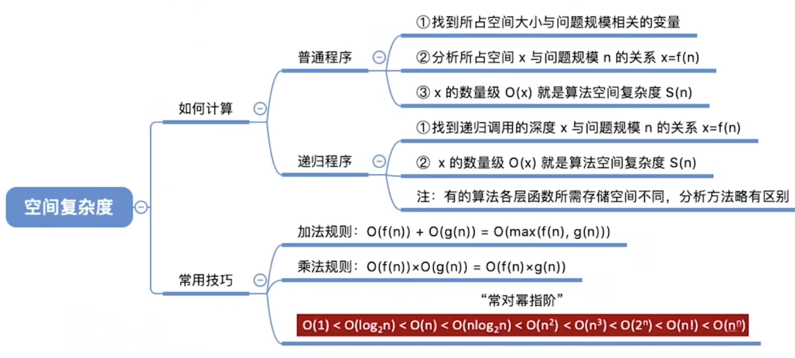
线性表
定义和基本操作
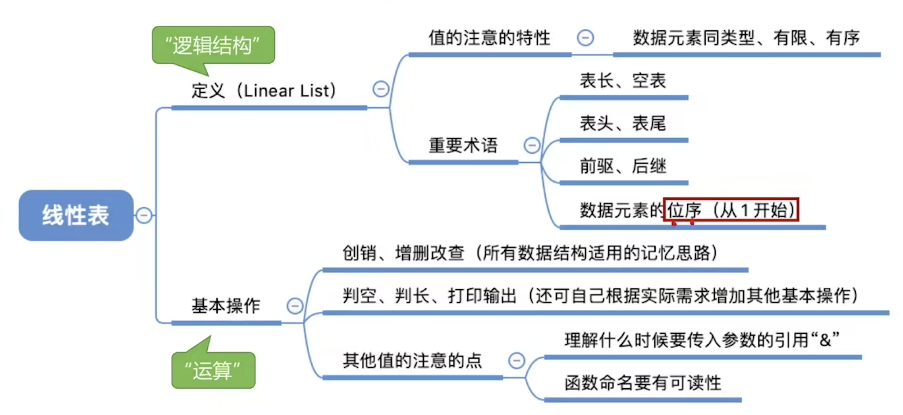
核心定义：由 n (n≥0) 个 相同类型 的数据元素组成的 有限序列。
关键词拆解 (考点)：
相同类型：意味着每个元素占用的空间大小相同。
有限：元素个数是有限的。
序列：元素之间有逻辑上的先后次序。
逻辑关系 (一对一)：
除第一个元素外，每个元素都有且仅有一个直接前驱。
除最后一个元素外，每个元素都有且仅有一个直接后继。
考题形式：会问“只有一个元素时，它有几个前驱/后继？” 答案是0个。
线性表的顺序存储——顺序表
定义：用一组 地址连续 的存储单元，依次存储 线性表的数据元素。
核心特点 (优缺点)：
优点：
随机存取：可以通过下标直接访问任意元素，时间复杂度为 O(1)，这是它最显著的优点。
存储密度高：不需要额外的空间来存储元素间的逻辑关系（比如指针）。
缺点：
插入/删除操作慢：需要移动大量元素来维持逻辑上的连续性。平均时间复杂度为 O(n)。
空间分配不灵活：需要预先分配一块连续的内存空间，大了浪费，小了容易溢出。
基本操作的时间复杂度：
按位查找：L.data[i] -> O(1)
按值查找：从头到尾遍历 -> 平均 O(n)
插入/删除：
最好情况 (表尾插入/删除表尾)：不移动元素 -> O(1)
最坏情况 (表头插入/删除表头)：移动 n/n-1 个元素 -> O(n)
平均情况：移动 n/2 或 (n-1)/2 个元素 -> O(n)
注意：位序 vs 数组下标：第 i 个元素 (位序为 i) 存储在数组下标为 i-1 的位置。
静态分配 vs 动态分配
静态分配 (定长数组)：#define MaxSize 50; ElemType data[MaxSize];
动态分配 (malloc/new)：ElemType * data; L.data = (ElemType*)malloc(...)
易错点：动态分配的顺序表，其元素在内存中仍然是连续存储的，它依然属于顺序存储结构，而不是链式存储。它只是大小可变而已。
基本操作代码
xxxxxxxxxx
// 默认的初始最大容量
// 定义顺序表结构体typedef struct { int *data; // 指示动态分配数组的指针 int MaxSize; // 顺序表的最大容量 int length; // 顺序表的当前长度} SeqList;
// 为了方便，我们将元素类型直接定为intctypedef int ElemType;
// 初始化顺序表void InitList(SeqList &L) { // 用malloc函数申请一片连续的存储空间 L.data = (ElemType *)malloc(InitSize * sizeof(ElemType)); if (!L.data) { // 内存分配失败 exit(1); // 或进行其他错误处理 } L.length = 0; // 空表当前长度为0 L.MaxSize = InitSize; // 初始容量为InitSize}
// 增加动态数组的长度void IncreaseSize(SeqList &L, int len) { ElemType *p = L.data; // 暂存原数组指针 // 使用realloc重新分配更大的空间 L.data = (ElemType *)realloc(p, (L.MaxSize + len) * sizeof(ElemType)); if (!L.data) { exit(1); // 内存分配失败 } L.MaxSize = L.MaxSize + len; // 更新最大容量}
// 在第 i (位序) 个位置插入元素 e// 成功返回 true, 失败返回 falsebool ListInsert(SeqList &L, int i, ElemType e) { // 判断 i 的范围是否有效 (位序i的合法范围是 [1, L.length + 1]) if (i < 1 || i > L.length + 1) { return false; // i值不合法 } // 如果存储空间已满，则增加容量 if (L.length >= L.MaxSize) { IncreaseSize(L, 5); // 比如每次增加5个元素的空间 } // 将第 i 个元素及其后的元素后移一位 // 注意：数组下标 j 从 L.length - 1 开始 for (int j = L.length; j >= i; j--) { L.data[j] = L.data[j - 1]; } // 在位置 i (数组下标 i-1) 放入 e L.data[i - 1] = e; L.length++; // 长度加 1 return true;}
// 删除第 i (位序) 个位置的元素，并用引用 e 返回该元素的值// 成功返回 true, 失败返回 falsebool ListDelete(SeqList &L, int i, ElemType &e) { // 判断 i 的范围是否有效 (位序i的合法范围是 [1, L.length]) if (i < 1 || i > L.length) { return false; // i值不合法 } // 将被删除的元素赋值给 e e = L.data[i - 1]; // 将第 i+1 个元素及其后的元素前移一位 for (int j = i; j < L.length; j++) { L.data[j - 1] = L.data[j]; } L.length--; // 长度减 1 return true;}
// 获取第 i (位序) 个位置的元素，通过 e 返回// C++ 中可以返回元素值，但用引用或指针返回更通用bool GetElem(SeqList L, int i, ElemType &e) { if (i < 1 || i > L.length) { return false; // i值不合法 } e = L.data[i - 1]; return true;}
// 按值查找，返回元素 e 在表中的位序// 若未找到，返回 0int LocateElem(SeqList L, ElemType e) { for (int i = 0; i < L.length; i++) { if (L.data[i] == e) { return i + 1; // 数组下标 i 对应位序 i+1 } } return 0; // 遍历完未找到}线性表的链式表示——链表
单链表
核心思想
物理离散，逻辑连续：用一组物理地址任意的存储单元（结点）存放数据，通过指针将这些结点链接起来，从而体现逻辑上的线性关系。
结点构成：每个结点包含两部分：
数据域 (data)：存放数据元素。
指针域 (next)：存放后继结点的地址。
头指针 vs 头结点 (！！！！)
头指针：一个指向链表第一个结点的指针。对于带头结点的链表，它指向头结点；对于不带头结点的链表，它指向首元结点。链表为空时，头指针为 NULL (仅限不带头结点的情况)。
头结点：在首元结点前附加的一个“虚拟”结点，其数据域可为空。
使用头结点的两大优势：
操作统一：对首元结点的插入/删除操作，与对其他结点的操作完全一样，无需特殊判断。
判空/判满逻辑统一：无论链表是否为空，头指针始终指向头结点，永不为 NULL。空表判断变为 L->next == NULL。
基本操作与复杂度 (默认带头结点)
按位查找：必须从头遍历，平均时间复杂度 O(n)。
按值查找：必须从头遍历，平均时间复杂度 O(n)。
插入/删除：
关键步骤：首先需要定位到操作位置的前驱结点，这个查找过程时间复杂度为 O(n)。
执行操作：找到前驱后，修改指针的操作本身是 O(1)。
总复杂度：O(n)。
考点陷阱：如果题目说“在给定指针 p 指向的结点后插入...”，由于不需要查找，此时插入的时间复杂度为 O(1)。但如果说“在给定指针 p 指向的结点前插入...”，对于单链表，仍需从头找到 p 的前驱，复杂度还是 O(n)。
建表方法 (算法题高频)
头插法 (逆序建表)：新结点永远插在头结点之后。实现简单，但生成链表的顺序与输入数据顺序相反。
尾插法 (顺序建表)：需要一个额外的尾指针 r 始终指向当前链表的尾结点，新结点永远插在 r 之后，并更新 r。生成链表顺序与输入数据顺序一致。
基本操作代码(带头结点)
xxxxxxxxxx
// --- 定义链表结点和类型 ---typedef int ElemType;typedef struct LNode { ElemType data; struct LNode *next;} LNode, *LinkList;
// --- 1. 初始化一个带头结点的空链表 ---bool InitList(LinkList &L) { L = (LNode *)malloc(sizeof(LNode)); // 分配一个头结点 if (L == NULL) return false; // 内存分配失败 L->next = NULL; // 头结点指针域置空 return true;}
// --- 2. 尾插法建立单链表 ---void CreateList_Tail(LinkList &L, int n) { LNode *r = L; // r为尾指针，初始指向头结点 for (int i = 0; i < n; i++) { LNode *s = (LNode *)malloc(sizeof(LNode)); printf("请输入第 %d 个元素: ", i + 1); scanf("%d", &s->data); s->next = NULL; r->next = s; // 插入到表尾 r = s; // r指向新的表尾结点 }}
// --- 3. 按位查找 ---// 返回第 i 个元素的结点指针，若不存在则返回 NULLLNode* GetElem(LinkList L, int i) { if (i < 1) return NULL; LNode *p = L->next; // p指向第一个元素结点 int j = 1; while (p != NULL && j < i) { p = p->next; j++; } return p; // 若p为NULL说明i超出范围，否则p指向第i个结点}
// --- 4. 按值查找 ---// 返回第一个值为 e 的结点指针，若不存在则返回 NULLLNode* LocateElem(LinkList L, ElemType e) { LNode *p = L->next; while (p != NULL && p->data != e) { p = p->next; } return p;}
// --- 5. 插入操作 ---// 在第 i 个位置插入元素 ebool ListInsert(LinkList &L, int i, ElemType e) { if (i < 1) return false; LNode *p = L; // p 指向头结点 int j = 0; // 循环查找第 i-1 个结点 while (p != NULL && j < i - 1) { p = p->next; j++; } if (p == NULL) return false; // i值不合法 LNode *s = (LNode *)malloc(sizeof(LNode)); s->data = e; s->next = p->next; // 步骤① p->next = s; // 步骤② return true;}
// --- 6. 删除操作 ---// 删除第 i 个位置的元素，并用 e 返回其值bool ListDelete(LinkList &L, int i, ElemType &e) { if (i < 1) return false; LNode *p = L; int j = 0; // 循环查找第 i-1 个结点 while (p != NULL && j < i - 1) { p = p->next; j++; } if (p == NULL || p->next == NULL) return false; // i值不合法或要删除的位置为空 LNode *q = p->next; // q 指向被删除的结点 e = q->data; p->next = q->next; // 从链中断开q free(q); // 释放空间 return true;}
// --- 7. 打印链表 ---void PrintList(LinkList L) { LNode *p = L->next; printf("链表内容: "); while (p != NULL) { printf("%d -> ", p->data); p = p->next; } printf("NULL\n");}
双链表
核心思想
在单链表基础上，每个结点增加一个前驱指针 prior，指向其直接前驱结点。
结点构成：prior | data | next
优缺点
优点：
可以方便地找到结点的前驱，因此在指定结点 p 前后进行插入/删除操作，时间复杂度都是 O(1)(找到 p 之后)。
可以从两个方向遍历链表。
缺点：空间开销更大（多一个指针域），插入删除时需要修改更多指针，逻辑稍复杂。
关键操作代码 (以在 p 结点后插入 s 结点为例)
xxxxxxxxxx// 假设 p->next 原来指向 q// 1. 新结点s的指针域设置s->next = p->next; // 步骤①: s的后继是qs->prior = p; // 步骤③: s的前驱是p// 2. 原链表相关结点的指针域修改p->next->prior = s; // 步骤②: q的前驱是sp->next = s; // 步骤④: p的后继是s考点：指针修改的顺序。p->next = s 必须在 p->next->prior = s 之后（如果同时操作 p->next），或者说 s->next = p->next 必须在 p->next = s 之前，否则会丢失 p 原来的后继。
循环链表
核心思想
循环单链表：尾结点的 next 指针不再是 NULL，而是指向头结点。
循环双链表：尾结点的 next 指向头结点，头结点的 prior 指向尾结点。
优点与特点
从任意结点出发都可以遍历整个链表。
用尾指针 r 代替头指针 操作更高效：因为通过 r 可以 O(1) 得到尾结点 (r)，也可以 O(1) 得到头结点 (r->next)。这样在表头和表尾操作都是 O(1)。
判空条件：L->next == L (头指针/头结点自己指向自己)。
遍历终止条件：p != L (当指针 p 再次回到头结点时结束)。
静态链表
核心思想：用数组模拟链式存储。数组的一个分量表示一个结点，用游标 (数组下标) 代替指针。
特点：适用于不支持指针的编程语言。需要预先分配大块连续空间。插入删除不需移动元素，只需修改游标。

顺序表和链表的比较
| 对比维度 | 顺序表 | 链表 | 核心总结 |
|---|---|---|---|
| 存储方式 | 连续存储 (逻辑相邻，物理也相邻) | 离散存储 (逻辑相邻，物理不一定相邻) | 顺序表像排队，链表像寻宝游戏 |
| 存储密度 | 高 (≈1)，所有空间都用于存数据 | 低 (<1)，每个结点都有额外的指针域开销 | 顺序表省空间，链表费空间 |
| 空间分配 | 静态分配 (需预先分配，大小固定) 或 动态分配 (扩容开销大) | 动态分配 (按需申请，灵活高效) | 顺序表一次性要一大块地，链表随用随要小块地 |
| 随机存取 | 支持，可通过下标直接访问 | 不支持，必须从头开始顺序遍历 | 这是两者最本质的区别 |
| 按位查找 | O(1) | O(n) | 顺序表“指哪打哪”，链表“从头找起” |
| 按值查找 | O(n) (无序) / O(log n) (有序，可用二分查找) | O(n) (只能顺序遍历) | 无序时一样慢；有序时顺序表有巨大优势 |
| 插入操作 | O(n) (平均需要移动 n/2 个元素) | O(n) (主要时间花在查找前驱上)，若指定前驱则为 O(1) | 顺序表“牵一发而动全身”，链表“断链重连” |
| 删除操作 | O(n) (平均需要移动 (n-1)/2 个元素) | O(n) (主要时间花在查找前驱上)，若指定前驱则为 O(1) | 同插入操作 |
| 优点 | 1. 支持随机存取，访问效率高 2. 存储密度高，空间利用率高 | 1. 插入、删除效率高 (不含查找) 2. 空间分配灵活，无溢出风险 | 顺序表查改快，链表增删快 |
| 缺点 | 1. 插入、删除效率低 2. 空间分配不灵活，易造成空间浪费或溢出 | 1. 不支持随机存取，访问效率低 2. 存储密度低，有额外空间开销 | 两者的优缺点正好互补 |
| 适用场景 | 频繁进行查找、访问操作，而增删操作较少的稳定线性表 | 频繁进行插入、删除操作，而查找访问较少的动态性强的线性表 | 稳定查改用顺序表，动态增删用链表 |
栈、队列和数组
栈
定义：只允许在一端（栈顶，Top）进行插入（入栈/压栈，Push）和删除（出栈/弹栈，Pop）操作的线性表。
核心特性：后进先出 (Last-In—First-Out, LIFO)。最后入栈的元素最先出栈。
逻辑结构：与线性表相同，是一对一的线性关系。
基本操作：InitStack（初始化）, Push（进栈）, Pop（出栈）, GetTop (读栈顶), StackEmpty（判断栈是否为空）。
这是本章最重要的考点。给定一个入栈序列（如1,2,3,4,5），判断某个序列是否是合法的出栈序列。
核心判据：对于出栈序列中的任意一个元素 x，在 x 之后出栈的元素中，所有比 x 先入栈的元素，必须按其入栈顺序的逆序出栈。
【技巧】：
找到出栈序列中第一个元素 x。
在入栈序列中，x 之前的所有元素，在出栈序列中必须构成一个逆序子序列。
举例：入栈 a,b,c,d，判断 c,d,a,b 是否合法？
c 先出，说明 a, b 还在栈里，且 b 在 a 上面。
d 接着出，说明 d 刚入栈就出来了。
接下来 a, b 必须按 b、a 的顺序出栈。但序列中是 a, b，不合法！
顺序栈 (SqStack)：
实现：使用数组实现，需要一个 top 指针（通常是数组下标）来指示栈顶。
栈顶指针 top 的两种定义 (考点)：
top 指向栈顶元素 (如 top 初始化为 -1)：
入栈：S.data[++S.top] = x;
出栈：x = S.data[S.top--];
判空：S.top == -1
判满：S.top == MaxSize - 1
top 指向栈顶元素的下一个位置 (如 top 初始化为 0)：
入栈：S.data[S.top++] = x;
出栈：x = S.data[--S.top];
判空：S.top == 0
判满：S.top == MaxSize
共享栈 (选择题考点)：
目的：节省空间，提高利用率。
实现：一个数组的两端作为两个栈的栈底，栈顶向中间增长。
判满条件：top1 + 1 == top2。
基本操作代码
xxxxxxxxxx
// 定义栈中元素的最大个数
// --- 1. 顺序栈的类型定义 ---typedef int ElemType; // 假设元素类型为整型typedef struct { ElemType data[MaxSize]; // 静态数组存放栈中元素 int top; // 栈顶指针 (数组下标)} SqStack;
// --- 2. 初始化栈 ---// 构造一个空栈 Svoid InitStack(SqStack &S) { S.top = -1; // 初始化栈顶指针为-1，表示栈空}
// --- 3. 判断栈空 ---// 若栈 S 为空，则返回 true，否则返回 falsebool StackEmpty(SqStack S) { if (S.top == -1) { return true; } else { return false; }}
// --- 4. 入栈操作 (Push) ---// 将元素 e 压入栈 Sbool Push(SqStack &S, ElemType e) { // 判断栈是否已满 if (S.top == MaxSize - 1) { return false; // 栈满，报错 } // 栈顶指针先加1，然后将新元素插入到栈顶位置 S.data[++S.top] = e; return true;}
// --- 5. 出栈操作 (Pop) ---// 从栈 S 弹出栈顶元素，并用 e 返回其值bool Pop(SqStack &S, ElemType &e) { // 判断栈是否为空 if (S.top == -1) { return false; // 栈空，报错 } // 先将栈顶元素取出，然后栈顶指针减1 e = S.data[S.top--]; return true;}
// --- 6. 获取栈顶元素 (GetTop) ---// 读取栈 S 的栈顶元素，并用 e 返回其值 (注意：不出栈)bool GetTop(SqStack S, ElemType &e) { // 判断栈是否为空 if (S.top == -1) { return false; // 栈空，报错 } // 直接返回栈顶指针指向的元素 e = S.data[S.top]; return true;}链栈 (LiStack)
实现：通常用不带头结点的单链表实现，链表头部作为栈顶。
入栈：相当于在链表头部进行头插法操作。
出栈：相当于删除链表的第一个元素。
优缺点：操作方便，无栈满问题；但有指针域的额外空间开销。
基本操作代码
xxxxxxxxxx
// --- 1. 链栈的类型定义 ---typedef int ElemType; // 假设元素类型为整型typedef struct LinkNode { ElemType data; // 数据域 struct LinkNode *next; // 指针域} *LiStack; // LiStack 是指向 LinkNode 的指针
// --- 2. 初始化栈 ---// 构造一个空栈 S (链栈的头指针置为NULL)void InitStack(LiStack &S) { S = NULL;}
// --- 3. 判断栈空 ---// 若栈 S 为空，则返回 true，否则返回 falsebool StackEmpty(LiStack S) { return (S == NULL);}
// --- 4. 入栈操作 (Push) ---// 将元素 e 压入栈 S (相当于在链表头部插入新结点)void Push(LiStack &S, ElemType e) { // 创建一个新结点 LinkNode *newNode = (LinkNode *)malloc(sizeof(LinkNode)); newNode->data = e; // 新结点的 next 指向原来的栈顶 newNode->next = S; // 更新栈顶指针 S，使其指向新的栈顶结点 S = newNode;}
// --- 5. 出栈操作 (Pop) ---// 从栈 S 弹出栈顶元素，并用 e 返回其值bool Pop(LiStack &S, ElemType &e) { // 判断栈是否为空 if (S == NULL) { return false; // 栈空，报错 } // 暂存栈顶结点，以便后续释放 LinkNode *temp = S; // 取出栈顶元素 e = temp->data; // 更新栈顶指针 S，使其指向下一个结点 S = S->next; // 释放原栈顶结点的空间 free(temp); return true;}
// --- 6. 获取栈顶元素 (GetTop) ---// 读取栈 S 的栈顶元素，并用 e 返回其值 (注意：不出栈)bool GetTop(LiStack S, ElemType &e) { // 判断栈是否为空 if (S == NULL) { return false; // 栈空，报错 } // 直接返回栈顶指针指向的元素 e = S->data; return true;}栈的典型应用
括号匹配
这是栈应用中最基础也最经典的问题，非常适合作为算法题考察。
问题描述：给定一个包含 ( ), [ ], { } 三种括号的字符串，判断其中的括号是否合法匹配。例如 "{[()]}" 是合法的，而 "{[(])}" 和 "{[}" 都是非法的。
核心思想： 括号的匹配具有“先进后出”的特点。当我们遇到一个左括号，我们期待在未来遇到一个对应的右括号来与之匹配。如果此时又遇到了一个新的左括号，那么这个新的左括号的匹配需求就变得“更紧急”，它必须先被匹配掉，然后才能轮到外层的旧左括号。这恰好符合栈的 LIFO 特性。
算法步骤：
初始化一个空栈。
从左到右依次扫描字符串中的每个字符。
如果遇到左括号 ((, [, {)：将其压入栈中。
如果遇到右括号 (), ], })：
首先检查栈是否为空。如果栈为空，说明没有左括号与之匹配，直接判定为非法。
如果栈不为空，弹出栈顶元素。
判断弹出的左括号是否与当前右括号是同一类型。例如，遇到 ) 就必须弹出 (。如果不是，判定为非法。
字符串扫描完毕后：检查栈是否为空。
如果栈为空，说明所有左括号都已成功匹配，判定为合法。
如果栈不为空，说明有多余的左括号没有被匹配，判定为非法。
举例说明：s = "{[()]}"
遇到 {：入栈。栈：{
遇到 [：入栈。栈：{, [
遇到 (：入栈。栈：{, [, (
遇到 )：栈不空，弹栈得到 (。匹配成功。栈：{, [
遇到 ]：栈不空，弹栈得到 [。匹配成功。栈：{
遇到 }：栈不空，弹栈得到 {。匹配成功。栈：空
字符串结束，栈为空。最终结果：合法。
代码参考
xxxxxxxxxx/** * @brief 检查给定的括号字符串是否匹配 * @param str 指向待检查的字符串的指针 * @return 如果匹配成功，返回 true；否则返回 false */bool bracketsCheck(const char *str) { // 1. 初始化一个空栈 SqStack S; InitStack(S);
int len = strlen(str); char poppedChar;
// 2. 从左到右依次扫描字符串中的每个字符 for (int i = 0; i < len; i++) { char currentChar = str[i]; // 3. 如果遇到左括号，则入栈 if (currentChar == '(' || currentChar == '[' || currentChar == '{') { if (!Push(S, currentChar)) { printf("Error: Stack overflow!\n"); // 理论上对于固定大小的栈需要处理 return false; } } // 4. 如果遇到右括号，则进行匹配 else if (currentChar == ')' || currentChar == ']' || currentChar == '}') { // 情况a: 栈为空，说明右括号多于左括号 if (StackEmpty(S)) { return false; } // 栈不为空，弹出一个左括号 Pop(S, poppedChar);
// 情况b: 弹出的左括号与当前右括号类型不匹配 if ( (currentChar == ')' && poppedChar != '(') || (currentChar == ']' && poppedChar != '[') || (currentChar == '}' && poppedChar != '{') ) { return false; } } // 如果遇到非括号字符，可以根据需求选择忽略或报错 // 这里我们选择忽略 }
// 5. 字符串扫描完毕后，检查栈是否为空 // 如果栈为空，匹配成功；否则说明左括号多于右括号 return StackEmpty(S);}表达式求值/转换 (中缀转后缀)
这是栈应用的另一个核心，深刻体现了栈处理“暂存”和“优先级”问题的能力。
问题描述：
转换：将人类习惯的中缀表达式（如 a+b*c-(d+e)）转换为计算机更容易处理的后缀表达式（如 abc*+de+-）。
求值：计算后缀表达式的值。
核心思想：
中缀转后缀：需要一个运算符栈。当扫描表达式时，操作数直接输出，而运算符则需要考虑其优先级。栈用来暂存那些“还不确定是否要立即运算”的运算符。LIFO特性保证了高优先级的运算符（如 *）会先于低优先级的运算符（如 +）被处理。
后缀表达式求值：需要一个操作数栈。从左到右扫描后缀表达式，遇到操作数就入栈；遇到运算符就从栈中弹出两个操作数进行计算，再将结果入栈。
算法步骤 (中缀转后缀)
目标：将 9 + 2 * 3 - (1 + 4) / 5 转换为后缀表达式。
所需工具：
1、一个运算符栈 (operatorStack)：用来存放暂时不能确定运算顺序的运算符。
2、一个结果列表 (resultList)：用来存储最终的后缀表达式结果。
规则：
遇到操作数：直接放入 resultList。
遇到左括号 (：直接压入 operatorStack。
遇到右括号 )：将 operatorStack 的栈顶运算符弹出并放入 resultList，直到遇到 ( 为止。( 只弹出，不放入 resultList。
遇到运算符 (如 +, -, *, /)：
若 operatorStack 为空，或栈顶是 ((左括号优先级最高)，则直接压入。
若当前运算符的优先级 > 栈顶运算符的优先级，则直接压入。
若当前运算符的优先级 ≤ 栈顶运算符的优先级，则将栈顶运算符弹出并放入 resultList，然后重复比较新的栈顶，直到满足压入条件，再将当前运算符压入。
扫描完毕后，将 operatorStack 中剩余的运算符依次弹出并放入 resultList。
详细步骤演示：9+2*3-(1+4)/5
| 步骤 | 扫描到 | 运算符栈 (底->顶) | 结果列表 (后缀表达式) | 操作说明 |
|---|---|---|---|---|
| 1 | 9 | [ ] (空) | [ 9 ] | 规则1：遇到操作数，直接输出。 |
| 2 | + | [ + ] | [ 9 ] | 规则4：栈空，+直接入栈。 |
| 3 | 2 | [ + ] | [ 9, 2 ] | 规则1：遇到操作数，直接输出。 |
| 4 | * | [ +, * ] | [ 9, 2 ] | 规则4：当前*优先级 > 栈顶+，*直接入栈。 |
| 5 | 3 | [ +, * ] | [ 9, 2, 3 ] | 规则1：遇到操作数，直接输出。 |
| 6 | - | [ - ] | [ 9, 2, 3, *, + ] | 规则4：当前-优先级 ≤ 栈顶*，弹出*； 当前-优先级 ≤ 新栈顶+，弹出+； 栈空，-入栈。 |
| 7 | ( | [ -, ( ] | [ 9, 2, 3, *, + ] | 规则2：遇到(，直接入栈。 |
| 8 | 1 | [ -, ( ] | [ 9, 2, 3, *, +, 1 ] | 规则1：遇到操作数，直接输出。 |
| 9 | + | [ -, (, + ] | [ 9, 2, 3, *, +, 1 ] | 规则4：栈顶是(，+直接入栈。 |
| 10 | 4 | [ -, (, + ] | [ 9, 2, 3, *, +, 1, 4 ] | 规则1：遇到操作数，直接输出。 |
| 11 | ) | [ - ] | [ 9, 2, 3, *, +, 1, 4, + ] | 规则3：遇到)，弹出栈顶+，直到遇到(，并将(丢弃。 |
| 12 | / | [ -, / ] | [ 9, 2, 3, *, +, 1, 4, + ] | 规则4：当前/优先级 > 栈顶-，/直接入栈。 |
| 13 | 5 | [ -, / ] | [ 9, 2, 3, *, +, 1, 4, +, 5 ] | 规则1：遇到操作数，直接输出。 |
| 14 | 结束 | [ ] (空) | [ 9, 2, 3, *, +, 1, 4, +, 5, /, - ] | 规则5：扫描结束，将栈中剩余的/和-依次弹出。 |
最终转换结果：9 2 3 * + 1 4 + 5 / -
后缀表达式的求值
目标：计算后缀表达式 9 2 3 * + 1 4 + 5 / - 的值。
所需工具：一个操作数栈 (operandStack)：用来存放待计算的数字。
规则：
从左到右扫描后缀表达式。
遇到操作数：直接压入 operandStack。
遇到运算符：从 operandStack 中连续弹出两个操作数（注意顺序：先弹出的是右操作数，后弹出的是左操作数），进行计算，并将计算结果压回 operandStack。
扫描完毕后，operandStack 中唯一剩下的那个数就是最终结果。
详细步骤演示:923*+14+5/-
| 步骤 | 扫描到 | 操作数栈 (底->顶) | 操作说明 |
|---|---|---|---|
| 1 | 9 | [ 9 ] | 规则2：遇到操作数，9入栈。 |
| 2 | 2 | [ 9, 2 ] | 规则2：遇到操作数，2入栈。 |
| 3 | 3 | [ 9, 2, 3 ] | 规则2：遇到操作数，3入栈。 |
| 4 | * | [ 9, 6 ] | 规则3：遇到*，弹出3和2，计算 2 * 3 = 6，将结果6压栈。 |
| 5 | + | [ 15 ] | 规则3：遇到+，弹出6和9，计算 9 + 6 = 15，将结果15压栈。 |
| 6 | 1 | [ 15, 1 ] | 规则2：遇到操作数，1入栈。 |
| 7 | 4 | [ 15, 1, 4 ] | 规则2：遇到操作数，4入栈。 |
| 8 | + | [ 15, 5 ] | 规则3：遇到+，弹出4和1，计算 1 + 4 = 5，将结果5压栈。 |
| 9 | 5 | [ 15, 5, 5 ] | 规则2：遇到操作数，5入栈。 |
| 10 | / | [ 15, 1 ] | 规则3：遇到/，弹出5和5，计算 5 / 5 = 1，将结果1压栈。 |
| 11 | - | [ 14 ] | 规则3：遇到-，弹出1和15，计算 15 - 1 = 14，将结果14压栈。 |
| 12 | 结束 | [ 14 ] | 规则4：扫描结束，栈中唯一元素14即为最终结果。 |
最终计算结果：14
函数调用/递归
这是栈在系统层面的应用，理解它有助于你深入理解程序是如何运行的。
问题描述：当一个函数调用另一个函数时，系统如何保存当前函数的执行状态（如执行到哪一行、局部变量的值），并在被调函数返回后能准确地恢复？递归调用（函数调用自身）又是如何实现的？
核心思想： 系统在内存中维护一个函数调用栈（或称系统栈）。每次发生函数调用，系统会创建一个称为栈帧（Stack Frame）或活动记录（Activation Record）的数据块并将其压入调用栈。这个栈帧保存了该次函数调用所需的所有信息。当函数执行完毕返回时，对应的栈帧就会被弹出。由于函数调用是层层嵌套的，最后一个被调用的函数最先返回，这完美契合了栈的 LIFO 特性。
栈帧中包含的内容：
返回地址：函数执行完毕后，程序应该回到主调函数的哪条指令继续执行。
参数：传递给被调函数的参数。
局部变量：在被调函数内部定义的变量。
上下文信息：主调函数的一些寄存器值等，用于恢复环境。
递归的实现： 递归本质上就是函数不断调用自身。每次递归调用，都会生成一个新的栈帧压入栈中。例如 Fact(3) 调用 Fact(2)，Fact(2) 调用 Fact(1)。调用栈中会依次压入 Fact(3), Fact(2), Fact(1) 的栈帧。当遇到递归基（出口，如 n=1）时，Fact(1) 返回，其栈帧弹出；然后 Fact(2) 计算完毕返回，其栈帧弹出；最后 Fact(3) 返回。如果递归没有出口或深度过大，会导致栈帧不断压栈而无法弹出，最终耗尽栈空间，引发栈溢出 (Stack Overflow)。
考研考点：通常以选择题形式考察，问函数调用时栈中保存了哪些信息，或者分析一段递归代码的执行过程。用栈实现非递归也是一个重要的算法设计思想。
卡特兰数
给定 n 个不同元素按顺序 (1, 2, 3, ..., n) 依次入栈，在入栈过程中可以随时出栈，问所有可能的出栈序列有多少种？
答案：这个问题的解就是第 n 个卡特兰数，记为 Cn 或 h(n)。
卡特兰数的递推公式：
由此可算：C0 = 1, C1 = 1, C2 = 2, C3 = 5, C4 = 14, C5 = 42 ...
卡特兰数问题
| 问题模型 | 问题描述 | 问题中的 'n' | 结果 |
|---|---|---|---|
| n个元素顺序入栈的合法出栈序列数 | n个不同元素按顺序 (1,2,3,...,n) 依次入栈，在入栈过程中可以随时出栈，可能的出栈序列有多少种？ | 元素个数 n | Cn |
| n个结点的不同二叉树形态数 | 给定 n 个结点，可以构成多少种不同结构的二叉树？ | 结点数 n | Cn |
| n对括号的合法括号序列数 | 由 n 对 () 组成的合法括号序列有多少种？ | 括号对数 n | Cn |
| (n+2)边形的三角剖分方法数 | 一个凸 (n+2) 边形，通过不相交的对角线将其分割成 n 个三角形，共有多少种不同的分割方法？ | 三角形个数 n | Cn |
| n+1个矩阵链乘的加括号方式数 | n+1 个矩阵进行链乘，例如 M1×M2×⋯×Mn+1，有多少种不同的加括号方式来决定运算次序？ | 乘号个数 n | Cn |
队列
队列的基本概念
定义：队列是一种操作受限的线性表，只允许在表的一端进行插入（入队），而在表的另一端进行删除（出队）。
核心特性：先进先出 (First-In, First-Out, FIFO)。最早进入队列的元素最先离开。
关键术语：
队头 (Front)：允许删除的一端。
队尾 (Rear)：允许插入的一端。
入队 (EnQueue)：在队尾插入元素。
出队 (DeQueue)：从队头删除元素。
队列的顺序存储结构
实现：使用数组实现，并设置 front 和 rear 两个指针（数组下标）分别指向队头和队尾。
问题：普通的顺序队列会产生“假溢出”现象。即数组中明明还有空闲空间（在队头之前），但由于 rear 指针已到达数组末尾，无法再入队。
循环队列
循环队列是解决“假溢出”问题的有效方案，也是考研中顺序队列的考察形式。
核心思想：将数组的存储空间在逻辑上视为一个环，通过取模（%）运算实现指针的循环移动。
指针进一操作：rear = (rear + 1) % MaxSize;
队空与队满的判断（！！！）： front == rear 这个条件既可能是队空，也可能是队满，为了区分它们，有三种主流方法：
牺牲一个存储单元（最常用）：数组中始终保留一个空位(如下图d2)。
队满条件：(rear + 1) % MaxSize == front
队空条件：front == rear
队列长度：(rear - front + MaxSize) % MaxSize
增设 size 变量：记录队列中元素的个数。
队满条件：size == MaxSize
队空条件：size == 0
增设 tag 标志：tag 记录最近一次操作是入队还是出队。

基本操作代码
xxxxxxxxxx
// 定义队列中元素的最大个数
// --- 1. 循环队列的类型定义 ---typedef int ElemType;typedef struct { ElemType data[MaxSize]; // 静态数组 int front; // 队头指针 int rear; // 队尾指针} SqQueue;
// --- 2. 初始化队列 ---void InitQueue(SqQueue &Q) { Q.front = 0; // 队头、队尾指针都指向0 Q.rear = 0;}
// --- 3. 判断队列是否为空 ---bool IsEmpty(SqQueue Q) { return Q.front == Q.rear;}
// --- 4. 判断队列是否已满 ---bool IsFull(SqQueue Q) { return (Q.rear + 1) % MaxSize == Q.front;}
// --- 5. 入队操作 ---bool EnQueue(SqQueue &Q, ElemType e) { if (IsFull(Q)) { return false; // 队满，无法入队 } Q.data[Q.rear] = e; Q.rear = (Q.rear + 1) % MaxSize; // 队尾指针循环进一 return true;}
// --- 6. 出队操作 ---bool DeQueue(SqQueue &Q, ElemType &e) { if (IsEmpty(Q)) { return false; // 队空，无法出队 } e = Q.data[Q.front]; Q.front = (Q.front + 1) % MaxSize; // 队头指针循环进一 return true;}
// --- 7. 获取队头元素 ---bool GetHead(SqQueue Q, ElemType &e) { if (IsEmpty(Q)) { return false; } e = Q.data[Q.front]; return true;}
队列的链式存储结构 (链队列)
实现：通常采用带头结点的单链表实现，需要 front 和 rear 两个指针。
front 指针：始终指向头结点。
rear 指针：始终指向链表的最后一个结点（即队尾元素）。
操作：
入队：在链表尾部（rear 所指结点之后）插入新结点，并更新 rear 指针。时间复杂度 O(1)。
出队：删除链表头部（front 所指结点的后继）的第一个元素结点。时间复杂度 O(1)。
队空条件：front == rear。
特殊情况：
当队列中只有一个元素时，出队后队列变空，此时需要同时将 rear 指针也指向头结点，即 rear = front。
空队列入队第一个元素时，front 和 rear 指针都需要更新。
基本操作代码
xxxxxxxxxx
// --- 1. 链式队列的类型定义 ---typedef int ElemType;
// 结点定义typedef struct LinkNode { ElemType data; struct LinkNode *next;} LinkNode;
// 链队列定义typedef struct { LinkNode *front; // 队头指针 LinkNode *rear; // 队尾指针} LinkQueue;
// --- 2. 初始化队列 ---void InitQueue(LinkQueue &Q) { // 创建一个头结点 Q.front = Q.rear = (LinkNode*)malloc(sizeof(LinkNode)); if (!Q.front) exit(1); // 内存分配失败 Q.front->next = NULL;}
// --- 3. 判断队列是否为空 ---bool IsEmpty(LinkQueue Q) { return Q.front == Q.rear;}
// --- 4. 入队操作 ---void EnQueue(LinkQueue &Q, ElemType e) { LinkNode *s = (LinkNode*)malloc(sizeof(LinkNode)); if (!s) exit(1); s->data = e; s->next = NULL; Q.rear->next = s; // 新结点插入到队尾之后 Q.rear = s; // 尾指针指向新的队尾结点}
// --- 5. 出队操作 ---bool DeQueue(LinkQueue &Q, ElemType &e) { if (IsEmpty(Q)) { return false; // 队空 } LinkNode *p = Q.front->next; // p指向待删除的队头元素 e = p->data; Q.front->next = p->next; // 修改头结点的指针域 // **关键**：如果删除的是最后一个元素，需同时修改rear指针 if (Q.rear == p) { Q.rear = Q.front; } free(p); // 释放结点空间 return true;}
双端队列 (Deque)
定义：允许在队列的两端都进行插入和删除操作的线性表。
分类：
输出受限的双端队列：一端允许插入删除，另一端只允许插入。
输入受限的双端队列：一端允许插入删除，另一端只允许删除。（一个端点像栈，一个端点像队列）
考点：通常以选择题形式出现，给定一个入队序列，判断哪个出队序列是不可能的。
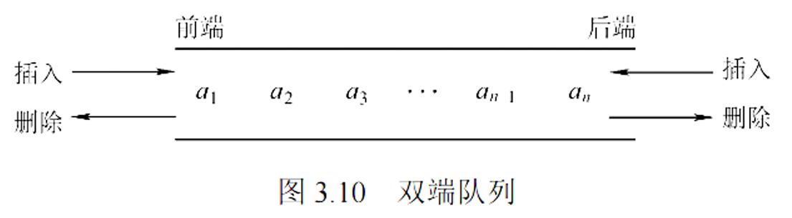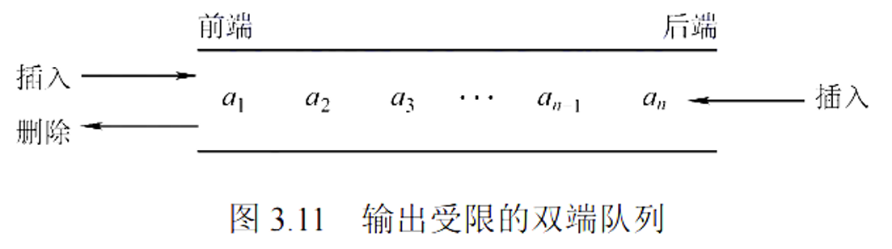
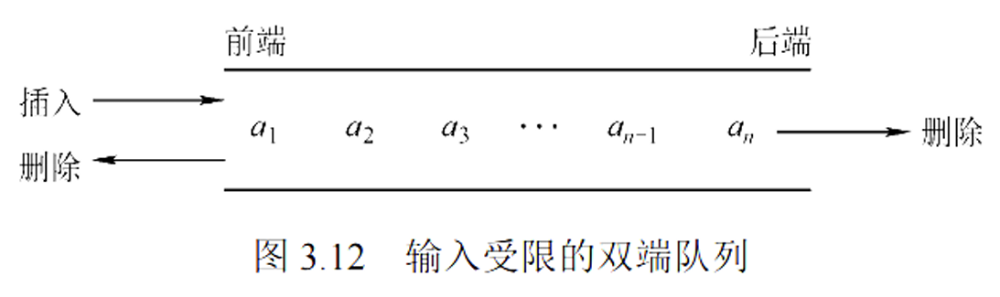
队列的典型应用
树的层次遍历
见后面树的相关知识点。
计算机系统中的应用
队列是计算机系统中用于任务调度、资源管理和数据传输的基石。
解决主机与外部设备速度不匹配的问题
问题场景：解决生产者和消费者速度不匹配的问题。一个典型的例子是主机与打印机。主机的CPU速度极快，而打印机打印速度很慢。如果CPU每次发送数据都要等待打印机打印完毕，那CPU的性能将被严重浪费。
解决方案：设置一个打印缓冲区，这个缓冲区在逻辑上就是一个队列。
工作流程：
CPU (生产者)：快速地将要打印的数据（如文档页）作为一个个任务，入队到打印缓冲区中。一旦数据送入缓冲区，CPU就可以立即返回去处理其他事情，无需等待。
打印机 (消费者)：按照自己的节奏，不断地从缓冲区的队头取出任务（出队），并进行打印。
FIFO的保证：队列的先进先出特性确保了文档是按页序打印的，先发送的页面先被打印。
解决由多用户引起的资源竞争问题
问题场景：在多任务操作系统中，有许多进程（或线程）都处于“就绪”状态，等待CPU资源。操作系统需要一个公平的策略来决定下一个该由哪个进程上CPU运行。
解决方案：操作系统维护一个就绪队列 (Ready Queue)。
工作流程 (以最简单的FCFS调度算法为例)：
当一个进程准备好运行所需的一切条件后，它的进程控制块 (PCB) 就会被入队到就绪队列的队尾。
当CPU变为空闲时，操作系统调度程序会从就绪队列的队头选择一个进程（出队）。
将CPU的使用权交给这个被选中的进程。
FIFO的保证：先来先服务 (First-Come, First-Served, FCFS) 调度算法就是队列的直接体现，它保证了等待时间最长的进程会优先获得CPU，体现了公平性。
数组与特殊矩阵
数组 (Array)
定义：数组是由 n (n>0) 个相同类型的数据元素构成的有限序列。它是线性表的一种推广，数组中的元素可以是其他数据结构（如数组）。
核心特性：
结构固定：数组的维数和维界（每维的长度）一旦定义，通常不会改变。
随机存取：数组最核心的优点。由于其采用顺序存储，可以通过下标直接计算出任一元素的内存地址，实现 O(1) 时间复杂度的访问。
数组通常采用顺序存储，即在内存中分配一块连续的存储空间。多维数组的元素存储到一维内存空间，需要遵循一个映射约定，最常见的是行优先存储。
行优先存储：
思想：按行存放，先存完第0行，再存第1行，以此类推。C/C++/Java等多数语言都采用此方式。
地址计算公式 (核心)：对于一个二维数组 A[m][n]（m行n列，下标从0开始），每个元素占 L 个存储单元，则元素 A[i][j] 的存储地址为：LOC(A[i][j]) = LOC(A[0][0]) + (i * n + j) * L
公式解读：
LOC(A[0][0]) 是数组的基地址（首地址）。
i * n 表示在第 i 行之前，已经完整存放了 i 行，每行有 n 个元素。
j 表示在第 i 行内部，A[i][j] 元素之前还有 j 个元素。
(i * n + j) 就是 A[i][j] 元素相对于基地址的偏移量。
列优先存储 (Column-Major Order)：
思想：按列存放，先存完第0列，再存第1列。Fortran等语言采用此方式。
地址计算公式：LOC(A[i][j]) = LOC(A[0][0]) + (j * m + i) * L
特殊矩阵的压缩存储
目的：对于那些具有大量相同值（如0）或元素分布有规律的矩阵，只存储其特殊部分，以节省大量存储空间。
对称矩阵
定义：一个n阶方阵 A，如果满足 A[i][j] = A[j][i]，则称为对称矩阵
压缩策略：由于上三角区和下三角区元素对应相等，我们只需存储其中一个三角区（通常是下三角区）和主对角线。
存储方式：将这 n*(n+1)/2 个元素存入一个一维数组 B 中。
下标转换公式 (!!)：假设按行优先存储下三角区（包括主对角线）到一维数组 B，且矩阵和数组下标都从0开始：
元素 A[i][j] (其中 i >= j) 对应 B[k] 的下标 k 为：k = i * (i + 1) / 2 + j
公式解读：
i * (i + 1) / 2：在第 i 行之前，一共有 i 个完整的行（从第0行到第i-1行），这些行共有 1+2+...+(i-1)+i 个元素，即 i*(i+1)/2 个元素。
j：在第 i 行中，A[i][j] 是第 j 个元素（从0开始计数）。
三角矩阵
定义：主对角线以上（或以下）的元素均为同一个常量 c 的矩阵。
压缩策略：存储与对称矩阵类似，只存储值不唯一的区域（如上/下三角区+主对角线），另外再用一个存储单元存放那个常量 c。
存储方式：共需要 n*(n+1)/2 + 1 个存储单元。下标转换公式与对称矩阵完全相同，只是数组B的总长度加1。
三对角矩阵
定义：所有非零元素都集中在主对角线、主对角线之上和之下的三条对角线上，即当 |i-j| > 1 时，A[i][j] = 0。
压缩策略：只存储这三条对角线上的元素。
下标转换公式 (!!)：假设按行优先存储到一维数组 B 中，矩阵和数组下标都从1开始：
元素 A[i][j] 对应 B[k] 的下标 k 为：k = 2 * i + j - 3
公式解读：
在第 i 行之前，有 i-1 行。其中第1行有2个非零元素，其余 i-2 行各有3个非零元素。所以前面共有 2 + 3*(i-2) 个元素。
在第 i 行，A[i][j] 是该行第 j-(i-1)+1 个非零元素。
稀疏矩阵
定义：矩阵中非零元素的个数远少于零元素的个数。
压缩策略：只存储非零元素。但除了元素值，还必须同时存储其所在的行、列信息。
存储方式：
三元组顺序表：
结构：每个非零元素用一个三元组 (row, col, value) 表示。
存储：所有三元组构成一个线性表，通常按行号或列号排序存储在一个结构数组中。
缺点：失去了随机存取特性。查找一个特定元素需要遍历三元组表，效率较低。
十字链表：（在图的存储中会详细学习，此处了解即可）
一种更高级的链式存储结构，能更快地进行矩阵的运算。
串的模式匹配

简单模式匹配算法
核心思想: 将模式串 P 的第一个字符与主串 S 的第一个字符对齐，然后逐个比较。如果全部匹配成功，则返回成功。如果中途遇到不匹配的字符，就将模式串 P 向右移动一位，再次从 P 的第一个字符开始，与主串 S 的下一个位置对齐，重新进行比较。
关键机制 (考点): 指针的回溯。在暴力算法中，当主串 S 的 i 位置与模式串 P 的 j 位置发生失配时：
主串的指针 i 需要回溯到本次匹配开始位置的下一个位置。公式为：i = i - j + 2 (假设下标从1开始)。
当在 S[i] 和 T[j] 发生不匹配时，意味着已经成功匹配了 j-1 个字符。所以，i - j + 1 表述本轮匹配在主串中的起始下标。
既然本轮从 i - j + 1 开始的匹配失败了，那么下一轮匹配就应该从它的下一个位置开始，即i = i - j + 2。
模式串的指针 j 回到起始位置 1。
时间复杂度: 最坏情况下是 O(nm)，其中 n 是主串长度，m 是模式串长度。比如主串是 "aaaaaaaaab"，模式串是 "aaab"，每次匹配都在最后一位失败，导致效率极低。
考查形式:
选择题: 问暴力匹配算法的时间复杂度，或者在某次失配后，主串指针 i 如何变化。
理解性题目: 作为KMP算法的对比，解释KMP算法的优势所在（即主串指针不回溯）。
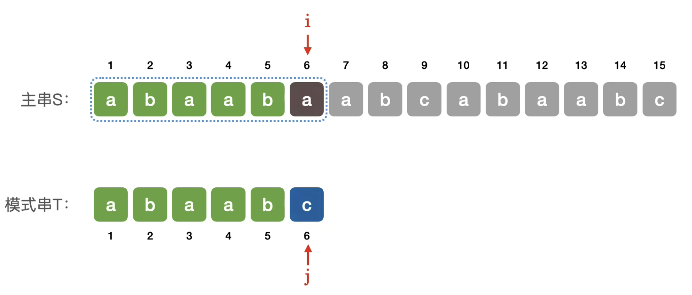
xxxxxxxxxx/** * @brief 简单模式匹配算法（暴力法），返回子串T在主串S中第一次出现的位置。 * @param S 主串 * @param T 模式串（子串） * @return 若匹配成功，返回T在S中的位置（从1开始）；否则返回0。 */int Index(SString S, SString T) { int i = 1, j = 1; // i和j分别作为主串S和模式串T的指针，从1开始
while (i <= S.length && j <= T.length) { if (S.ch[i] == T.ch[j]) { ++i; ++j; // 继续比较后继字符 } else { i = i - j + 2; // 指针后退重新开始匹配 j = 1; } }
if (j > T.length) { // 匹配成功，返回起始位置 return i - T.length; } else { // 匹配失败 return 0; }}
KMP算法
KMP 核心思想
核心: 利用已经匹配过的信息，避免主串指针 i 的回溯。
原理: 当匹配过程中发生失配时，我们不简单地将模式串右移一位，而是根据模式串自身的结构特性，计算出一个最佳的移动距离，使得模式串尽可能多地向右滑动，并从一个中间位置继续与主串当前位置进行比较。这个“结构特性”就由 next 数组来描述。
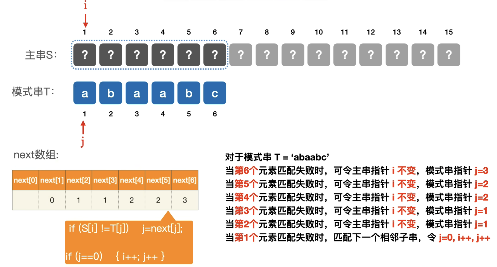
next 数组的理解与手工求解 (！！！)
next 数组是KMP算法的灵魂。
物理意义: next[j] 的值 k 指出：当模式串的第 j 个字符 P[j] 与主串失配时，下一步应该用模式串的第 k 个字符 P[k] 继续与主串当前位置进行比较。即 j 指针跳转到 k。
手工求解方法:
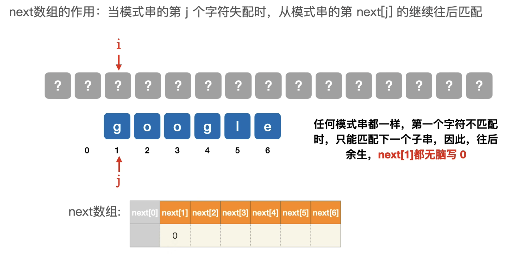
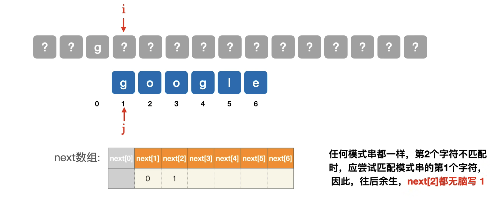
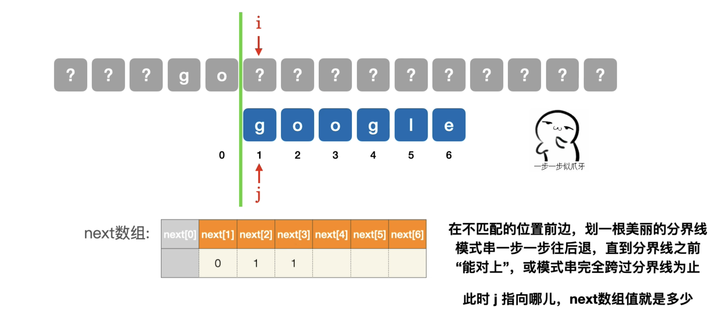
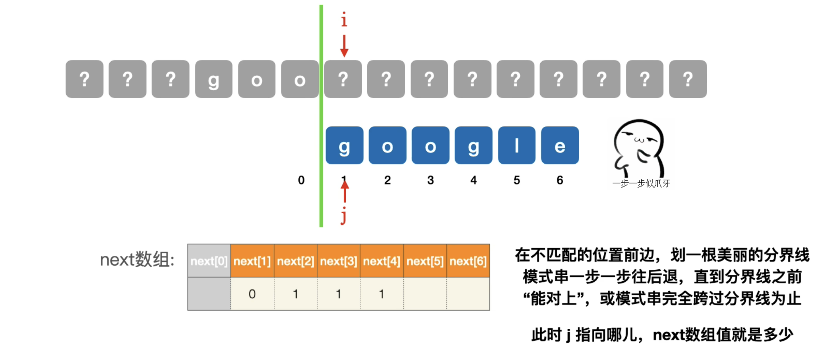
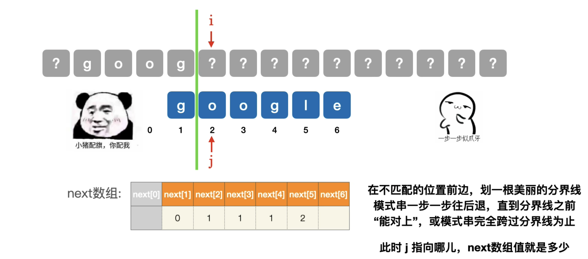
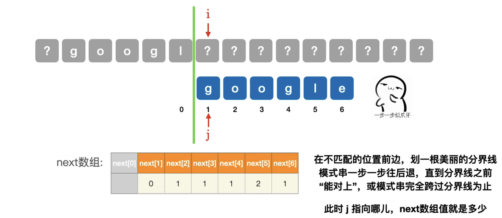
next数组求解例子
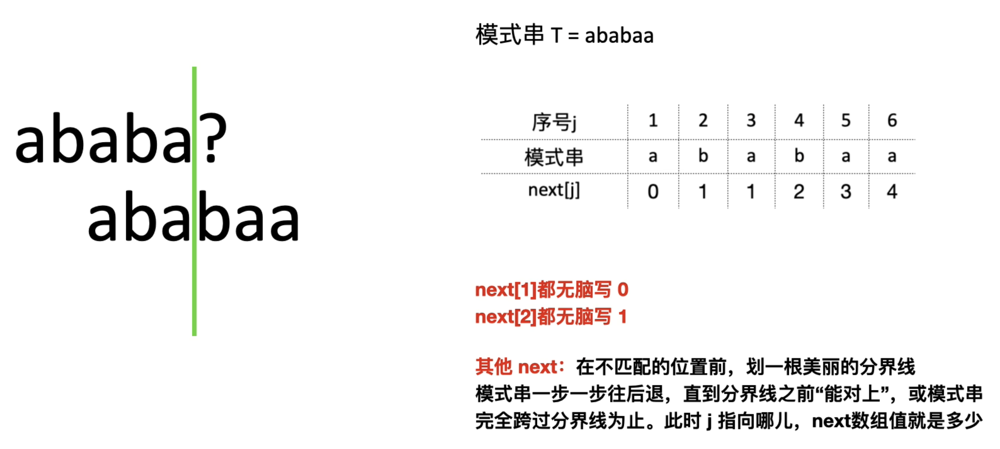
朴素匹配算法 VS KMP算法
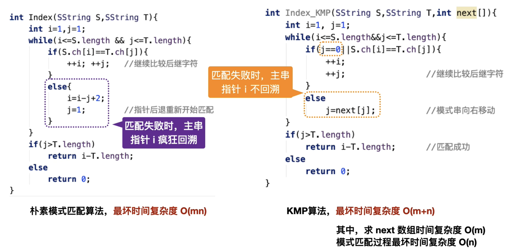
KMP 算法的改进：nextval 数组
改进动机: 如果 P[j] 与主串失配，而 P[j] 恰好又等于 P[next[j]]，那么用 P[next[j]] 去比较必然也失败。nextval 就是为了跳过这种无效比较。
例子：模式串 'aaaab'，next 数组为 01234。当 P[4]('a') 失配时，next[4]=3，下一步用 P[3]('a') 比较，必然还是失败。
注意：KMP算法的优化只是优化了next数组。
nextval 的计算规则 (基于 next 数组，相当于做了一个递归):
nextval[1] = 0 (第一个位置无脑写0)
对于 j > 1:
如果 P[j] 与 P[next[j]] 不相等，则 nextval[j] = next[j] （直接抄下来）。
如果 P[j] 与 P[next[j]] 相等，则 nextval[j] = nextval[next[j]] (向前递归查找，直到找到一个不相等的位置)。
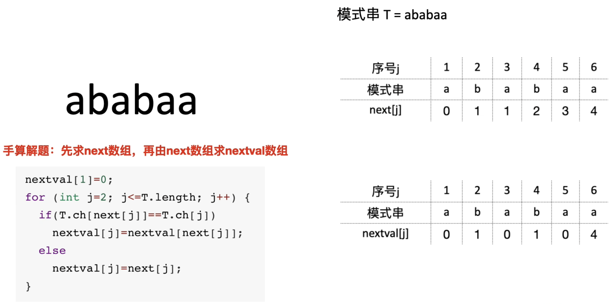
j=3时，模式串字符为a，next[3]=1，这时去看j=1时，模式串对应字符为a，a=a，则nextval[3]=nextval[next[3]]=0
j=6时，模式串字符为a，next[6]=4，这时去看j=4时，模式串对应字符为b，a!=b，则nextval[6]=next[6]=4
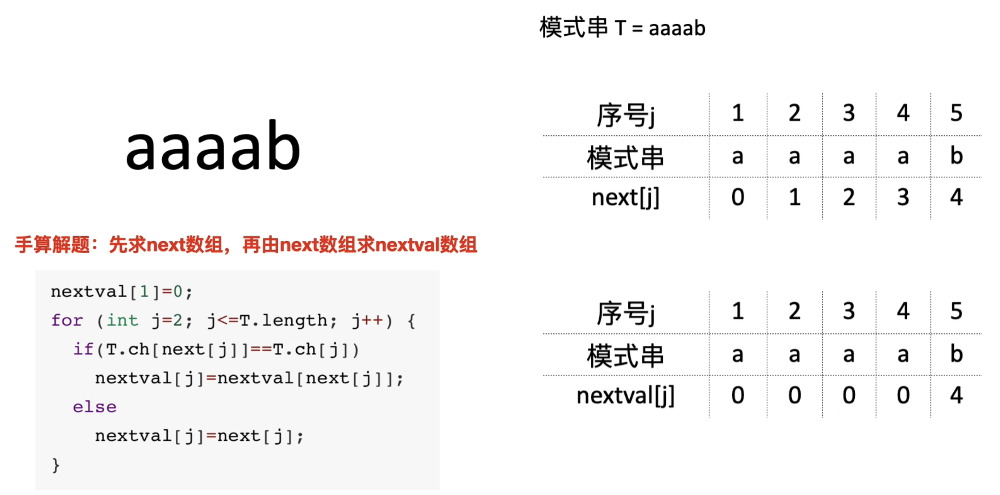
树与二叉树
树的基本概念
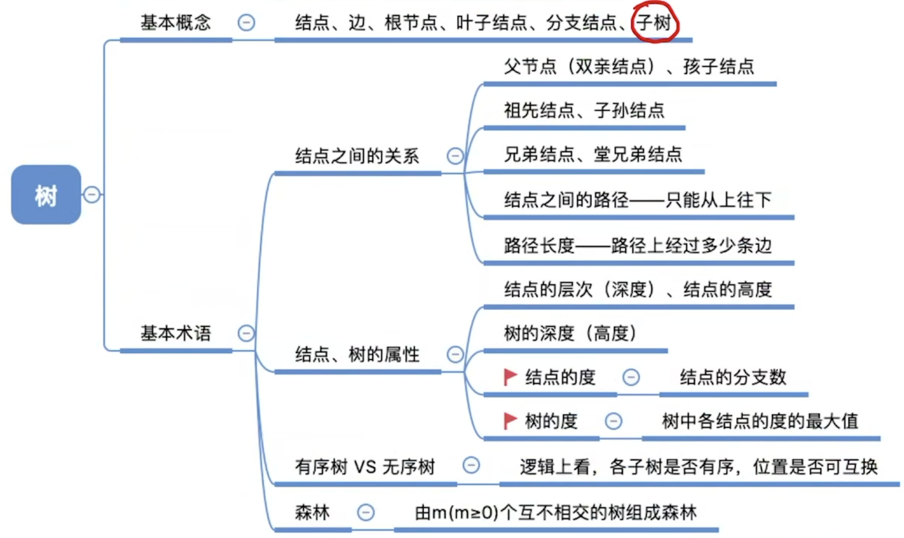
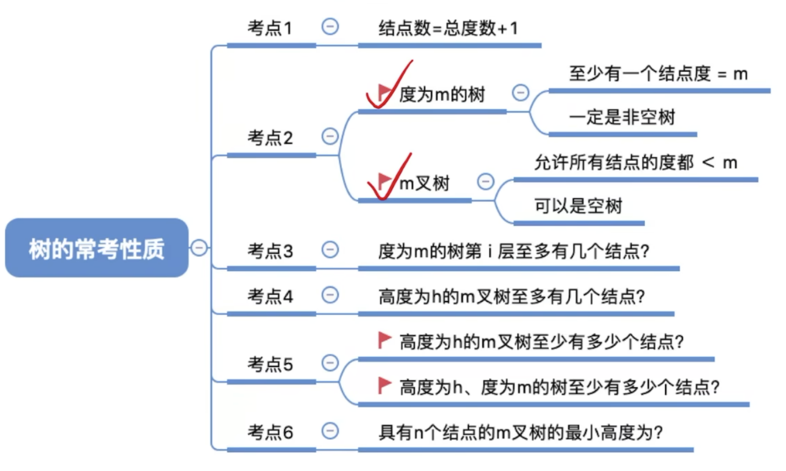
考点3：度为m的树第 i 层至多有几个结点？
答案：m^(i-1) 个结点。（假设根结点在第1层）
考点4：高度为h的m叉树至多有几个结点？
答案：(m^h - 1) / (m - 1) 个结点。(等比数列求和)
考点5：高度为h的树，至少有多少个结点？
▶︎ 高度为h的m叉树至少有多少个结点？
答案：h 个结点。
▶︎ 高度为h、度为m的树至少有多少个结点？
答案：h + m - 1 个结点。
考点6：具有n个结点的m叉树的最小高度为？
答案：
二叉树
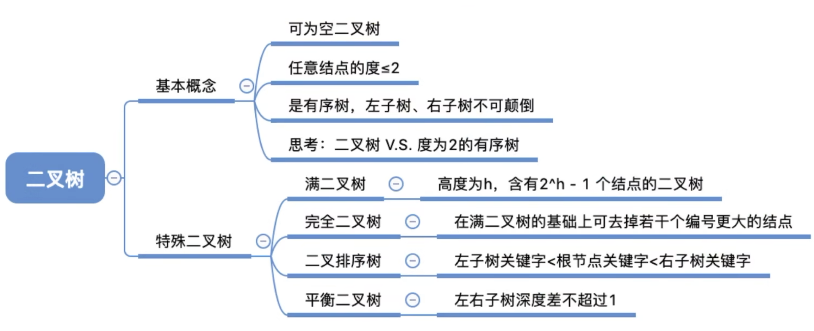
二叉树的核心性质
性质1 (!!!): n₀ = n₂ + 1
含义：任意非空二叉树中，叶结点数(n₀)比度为2的结点数(n₂)多一个。
证明：设度为0,1和2的结点个数分别为no,n1和n2，结点总数n=no+n1+n2。再看二叉树中的分支数，除根结点外，其余结点都有一个分支进入，设B为分支总数，则n=B+1。这些分支是由度为1或2的结点射出的，因此又有B=n1+2n2。于是得no+n1+n2=n1+2n2+1，则n₀=n₂+1。
性质2：完全二叉树的性质
高度: 具有 n 个结点的完全二叉树的高度 h 为 ⌊log₂n⌋ + 1(向下取整) 或 ⌈log₂(n+1)⌉（向上取整）。
父子关系 (基于层序编号, 编号从1开始):
结点 i 的父结点编号为 ⌊i/2⌋ (i > 1)。
结点 i 的左孩子编号为 2i (前提是 2i ≤ n)。
结点 i 的右孩子编号为 2i + 1 (前提是 2i+1 ≤ n)。
结点类型判断:
最后一个非叶结点（分支结点）的编号是 ⌊n/2⌋。
编号大于 ⌊n/2⌋ 的结点都是叶结点。
完全二叉树最多只会有一个度为1的结点。
二叉树的存储结构
顺序存储结构 (数组)
原理: 按层序遍历将结点存入数组。只适用于完全二叉树（和满二叉树），因为只有这样才能保证数组下标能反映逻辑关系。
优点: 查找结点的父子、兄弟关系方便快捷（通过下标计算）。
缺点: 对于一般二叉树，特别是单支树（斜树），会造成巨大的空间浪费。
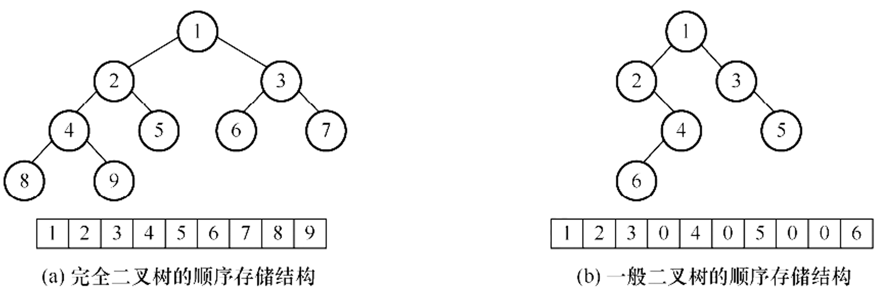
链式存储结构 (二叉链表)
结构: 每个结点包含 data, lchild, rchild 三个域。
核心结论 (!!!): 在一个有 n 个结点的二叉链表中，一定有 n+1 个空指针域。
推导: 总指针域有 2n 个。树有 n-1 条边，每条边消耗一个指针域。所以空指针域数量 = 2n - (n-1) = n+1。
二叉链表的存储结构和定义代码

xxxxxxxxxxtypedef struct BiTNode{ ElemType data; //数据域 struct BiTNode *lchild, *rchild; //左右孩子指针}BiTNode, *BiTree二叉树的先中后序遍历
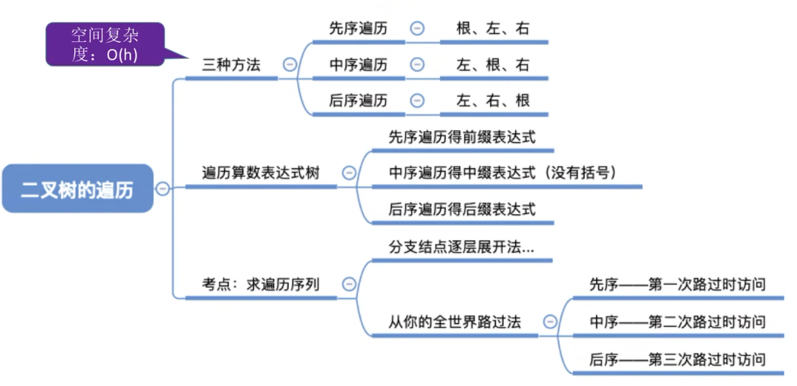
二叉树的先中后序遍历属于深度优先搜索（DFS）。
深度优先搜索（DFS，Depth-First Search）是一种用于遍历或搜索树或图的算法。
当使用 DFS 遍历二叉树中的结点时，算法会优先探索树的深度，直到达到最深的节点。 当达到叶子节点或无法继续深入时，算法会回溯返回到上一个节点，探索其他分支。
时间复杂度: 无论是哪种遍历，每个结点都会被访问且仅被访问一次，因此时间复杂度都是 O(n)，其中 n 是结点总数。
空间复杂度: O(h)，其中 h 是树的高度。
原因: 递归实现遍历时，需要用到函数调用栈。栈的最大深度取决于树的高度。
考点延伸:
当树为平衡二叉树时，h ≈ log₂n，空间复杂度为 O(logn) (最优情况)。
当树为单支树（退化成链表）时，h = n，空间复杂度为 O(n) (最坏情况)。
应用 - 遍历算数表达式树
假设我们有一个表达式树，其中叶结点是操作数，非叶结点是操作符。
先序遍历 -> 前缀表达式 (波兰式)
例如，对 a+b*(c-d)-e/f 的表达式树进行先序遍历，得到 -+a*b-cd/ef。
中序遍历 -> 中缀表达式
例如，对 a+b*(c-d)-e/f 的表达式树进行中序遍历，得到 a+b*c-d-e/f。
注意“(没有括号)”,表达式树中没有括号，可能会丢失优先级。
后序遍历 -> 后缀表达式 (逆波兰式)
例如，对 a+b*(c-d)-e/f 的表达式树进行后序遍历，得到 abcd-*+ef/-。
后缀表达式是栈这种数据结构的经典应用，可以直接用栈进行求值。
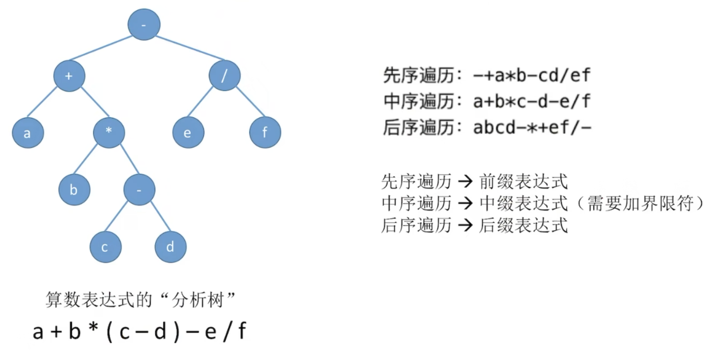
先中后序遍历代码（熟练掌握）
xxxxxxxxxx//先序遍历void PreOrder(BiTree T) { if (T != NULL) { visit(T); //访问根节点 PreOrder(T->lchild); //递归遍历左子树 PreOrder(T->rchild); //递归遍历右子树 }}//中序遍历void InOrder(BiTree T) { if (T != NULL) { InOrder(T->lchild); //递归遍历左子树 visit(T); //访问根节点 InOrder(T->rchild); //递归遍历右子树 }}//后序遍历void PostOrder(BiTree T) { if (T != NULL) { PostOrder(T->lchild); //递归遍历左子树 PostOrder(T->rchild); //递归遍历右子树 visit(T); //访问根节点 }}求解遍历序列
考点1：由两种遍历序列唯一确定一棵二叉树
核心规则: 必须包含中序序列，再配合先序或后序序列，才能唯一确定一棵二叉树。
先序 + 中序 -> 唯一确定
后序 + 中序 -> 唯一确定
先序 + 后序 -> 无法唯一确定（除非是满二叉树等有特殊限制的树）
重建方法 (分支结点逐层展开法):
找根:
在先序序列中，第一个元素是根。
在后序序列中，最后一个元素是根。
划分左右子树:
在中序序列中找到这个根。
根左边的所有元素构成左子树的中序序列。
根右边的所有元素构成右子树的中序序列。
递归求解: 根据左右子树的结点个数，去对应的先序/后序序列中找到左右子树的序列，然后对左右子树重复上述步骤1和2。
考点2：快速手算遍历序列的技巧 (“从你的全世界路过”法)
方法: 想象你是一个小人，从根结点的左侧开始，沿着树的轮廓走一圈(脑补出空结点)，最终回到根结点的右侧。
规则:
第一次经过一个结点（从该结点的左边经过）时，记录下来，这就是先序序列。
第二次经过一个结点（从该结点的下方，即从其子树返回时经过）时，记录下来，这就是中序序列。
第三次经过一个结点（从该结点的右边经过，彻底离开该结点）时，记录下来，这就是后序序列。

二叉树的层次遍历
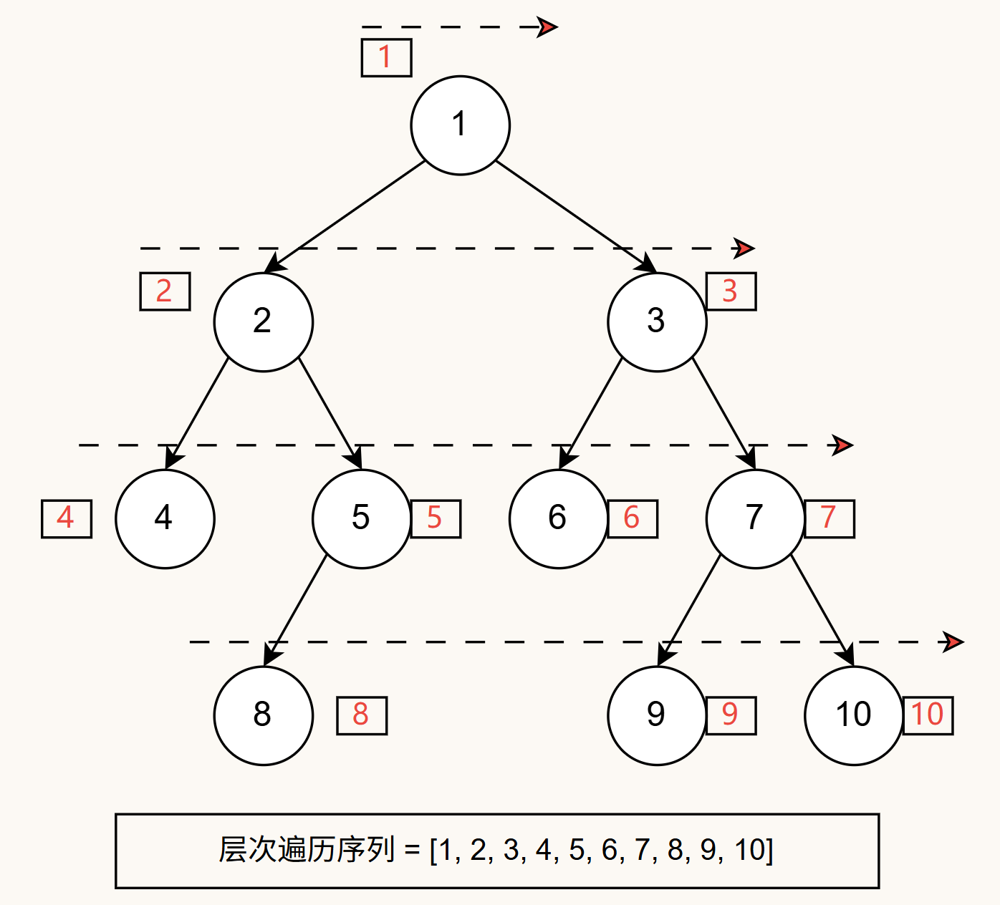
二叉树的层次遍历，也称为 广度优先搜索（BFS,Breadth-First Search），是一种从上到下、从左到右逐层访问二叉树节点的方法。
核心工具: 队列。队列的先进先出 (First-In, First-Out, FIFO) 特性完美地契合了层次遍历“一层一层处理”的需求。
算法步骤:
初始化一个空队列。
将根结点入队。
进入循环，条件是队列不为空： a. 从队列中出队一个结点（记为 current）。 b. 访问 current 结点（例如，打印其值）。 c. 检查 current 结点的孩子：如果它有左孩子，则将其左孩子入队。 d. 检查 current 结点的孩子：如果它有右孩子，则将其右孩子入队。
当循环结束（队列为空）时，遍历完成。
层次遍历代码（熟练掌握）
xxxxxxxxxxvoid LevelOrder(BiTree T) { InitQueue(Q); //初始化辅助队列 BiTree p; EnQueue(Q, T); //将根结点入队 while(!IsEmpty(Q)) { //队列不空则循环 DeQueue(Q, p); //队头结点出队 visit(p); //访问出队结点 if(p->lchild != NULL) EnQueue(Q, p->lchild); //若左孩子不空，则左孩子入队 if(p->rchild != NULL) EnQueue(Q, p->rchild); //若右孩子不空，则右孩子入队 }}线索二叉树
为什么需要线索二叉树？
空间浪费: 在一个有 n 个结点的二叉链表中，总共有 2n 个指针域。其中，只有 n-1 个指针域被用来指向孩子结点（因为有 n-1 条边）。这意味着有 2n - (n-1) = n+1 个指针域是空 (NULL) 的。这些空间被浪费了。
信息缺失: 普通的二叉链表只能表示“父子”关系。如果我们想找到一个结点在特定遍历序列（如中序）中的前驱 或后继，操作会非常低效，通常需要重新遍历或者借助栈。
线索二叉树的核心思想：利用这些 n+1 个空指针域，存放指向该结点在特定遍历序列中的前驱和后继的指针，从而变废为宝。
线索二叉树的定义与结构
线索 (Thread): 原本为空的指针域，现在被用来指向前驱或后继，这个被利用的指针就称为“线索”。
线索化 (Threading): 建立线索的过程。
结点结构: 为了区分指针是指向孩子还是指向线索，每个结点需要增加两个标志位：
ltag: 左指针标志
ltag = 0: lchild 指向结点的左孩子。
ltag = 1: lchild 指向结点的前驱（是线索）。
rtag: 右指针标志
rtag = 0: rchild 指向结点的右孩子。
rtag = 1: rchild 指向结点的后继（是线索）。
线索二叉树的结点结构和定义
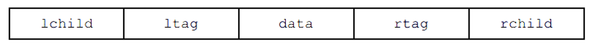
xxxxxxxxxx// 结构体定义typedef struct ThreadNode { ElemType data; struct ThreadNode *lchild, *rchild; int ltag, rtag; // 0 for child, 1 for thread} ThreadNode, *ThreadTree;重要结论: 线索二叉树是一种逻辑上的线性序列（通过线索连接）叠加在物理上的树形结构之上。
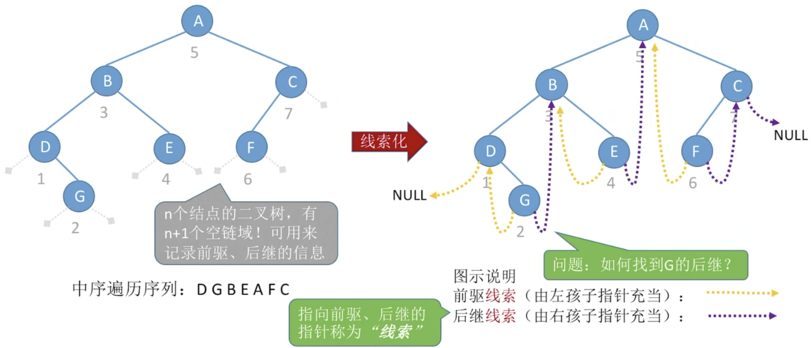
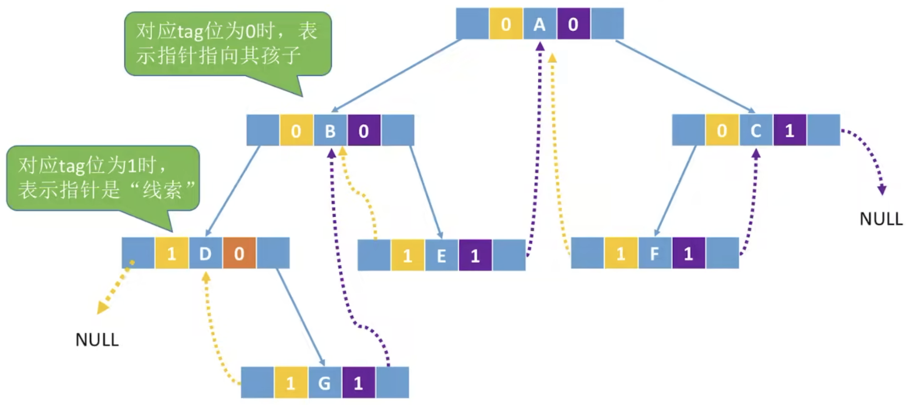
总结
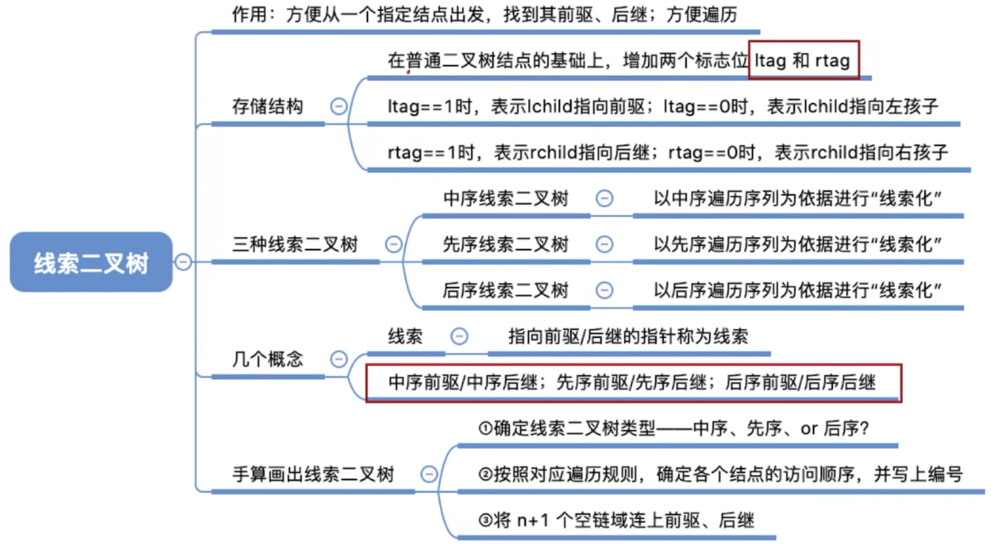
二叉树的线索化

xxxxxxxxxx
typedef char ElemType;
// 线索二叉树结点结构体定义typedef struct ThreadNode { ElemType data; // 数据域 struct ThreadNode *lchild, *rchild; // 左、右孩子指针 int ltag, rtag; // 左右标志位 (0:孩子, 1:线索)} ThreadNode, *ThreadTree;
// 定义一个全局指针 pre，用于在线索化过程中记录当前访问结点的前驱ThreadNode *pre;
void visit(ThreadNode *p) { // 如果 p 的左孩子为空, 那么它的 lchild 指针就应该指向其中序前驱 (即 pre) if (p->lchild == NULL) { p->ltag = 1; // 将左标志位设为 1, 表示 lchild 是线索 p->lchild = pre; // lchild 指向刚刚访问过的前驱结点 pre } // 如果 pre 不为空, 且 pre 的右孩子为空, 那么 pre 的 rchild 指针就应该指向其后继 (即 p) if (pre != NULL && pre->rchild == NULL) { pre->rtag = 1; // 将 pre 的右标志位设为 1, 表示 rchild 是线索 pre->rchild = p; // pre 的 rchild 指向当前结点 p } // 在处理完 p 之后, p 就成为了下一个结点的“前驱” pre = p;}
// --- 中序线索化函数 ---void InThread(ThreadTree T) { if (T != NULL) { InThread(T->lchild); // 递归线索化左子树 visit(T); // 调用 visit 函数访问当前结点，并建立相关线索 InThread(T->rchild); // 递归线索化右子树 }}// --- 先序线索化函数 ---void PreThread(ThreadTree T) { if (T != NULL) { visit(T); // 调用 visit 函数访问当前结点，并建立相关线索 if(T->ltag == 0) PreThread(T->lchild); // 递归线索化左子树 PreThread(T->rchild); // 递归线索化右子树 }}// --- 后序线索化函数 ---void PostThread(ThreadTree T) { if (T != NULL) { PostThread(T->lchild); // 递归线索化左子树 PostThread(T->rchild); // 递归线索化右子树 visit(T); // 调用 visit 函数访问当前结点，并建立相关线索 }}
// --- 创建中序线索二叉树的主函数 ---void CreateInThread(ThreadTree T) { pre = NULL; // 1. 在开始线索化之前, 必须将全局变量 pre 初始化为 NULL
if (T != NULL) { // 2. 只有非空树才需要线索化 // 3. 调用递归函数, 开始中序遍历并建立线索 InThread(T); // 4. 处理中序遍历的最后一个结点 // 遍历结束后, pre 指向的是中序序列的最后一个结点 // 该结点的 rchild 必定为空, 我们需要手动将其后继线索建立起来 if (pre->rchild == NULL) { // 必为空，可不加if pre->rtag = 1; // 将其右标志位设为 1, 表示是线索 } }}// --- 创建先序线索二叉树的主函数 ---void CreatePreThread(ThreadTree T) { pre = NULL; if (T != NULL) { PreThread(T); if (pre->rchild == NULL) { pre->rtag = 1; } }}// --- 创建后序线索二叉树的主函数 ---void CreatePostThread(ThreadTree T) { pre = NULL; if (T != NULL) { PostThread(T); if (pre->rchild == NULL) { pre->rtag = 1; } }}树的存储结构
1.双亲表示法
结构: 采用顺序存储（数组）。每个数组元素除了存储结点数据外，还包含一个 parent 域，用来存储其父结点在数组中的下标。根结点的 parent 域通常设为 -1。
优点:
查找父结点非常高效，时间复杂度为 O(1)。
很容易找到树的根（parent 为 -1 的那个）。
缺点:
查找子结点非常困难，需要遍历整个数组才能找到一个结点的所有孩子。
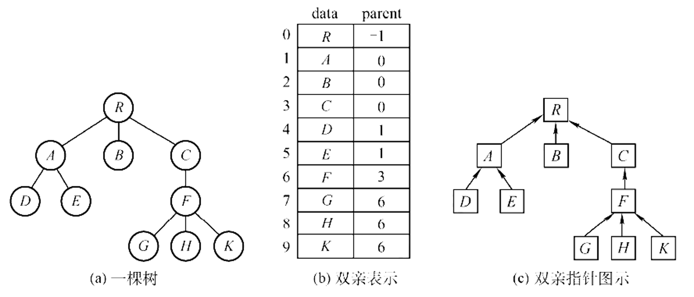
2. 孩子表示法
结构: 采用顺序存储+链式存储的混合模式。
用一个数组存放树的所有结点。
数组的每个元素除了数据域，还有一个指针，指向一个单链表的头结点。
这个单链表链接了该结点的所有孩子。
优点: 查找子结点非常方便，直接顺着链表遍历即可。
缺点:
查找父结点很困难，需要遍历整个结构。
查找兄弟结点也不方便，需要通过父结点来中转。
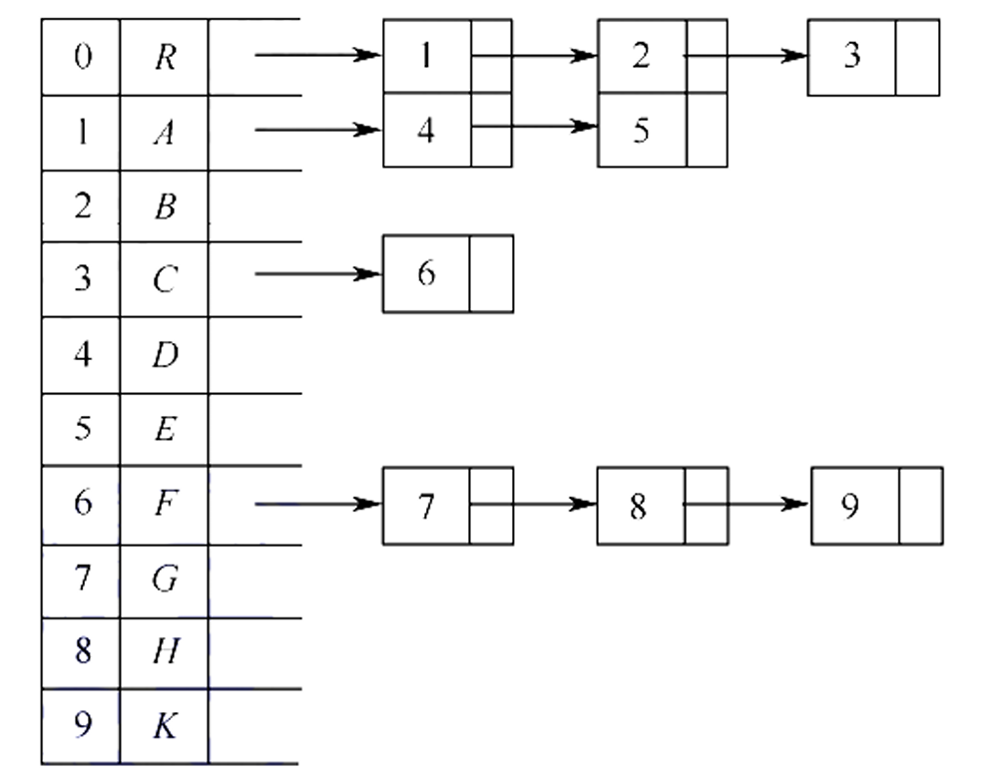
3. 孩子兄弟表示法
结构: 这是最重要、最常用的一种方法，也是后续转换的基础。它采用链式存储。
每个结点包含三个域：data、firstchild（指向第一个孩子的指针）、nextsibling（指向下一个兄弟的指针）。
结构与二叉树的同构性:
firstchild 指针，可以看作是二叉树的左孩子指针 (lchild)。
nextsibling 指针，可以看作是二叉树的右孩子指针 (rchild)。
优点:
完美地将任意树转换成了一棵二叉树，使得所有针对二叉树的操作都可以应用到普通树上。
查找孩子和兄弟都相对方便。
缺点: 查找父结点依然不方便（除非额外增加父指针）。
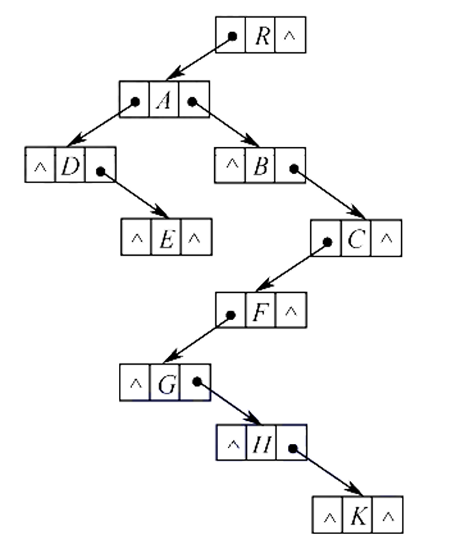
树、森林与二叉树的转换
1. 树 转换为 二叉树
规则（孩子兄弟表示法）:
加线: 在所有兄弟结点之间加一条连线。
去线: 对每个结点，只保留它与第一个孩子的连线，删去与其他所有孩子的连线。
旋转/整理: 以树根为轴心，顺时针旋转约45度，整理成二叉树的形态。
口诀记忆: 左孩子，右兄弟。
树中结点的第一个孩子，成为二叉树中的左孩子。
树中结点的相邻右兄弟，成为二叉树中的右孩子。
重要性质:
树的根结点没有右兄弟，所以转换后的二叉树的根结点一定没有右子树。
一个结点的孩子，在二叉树中表现为从其左孩子开始的一条右斜链。
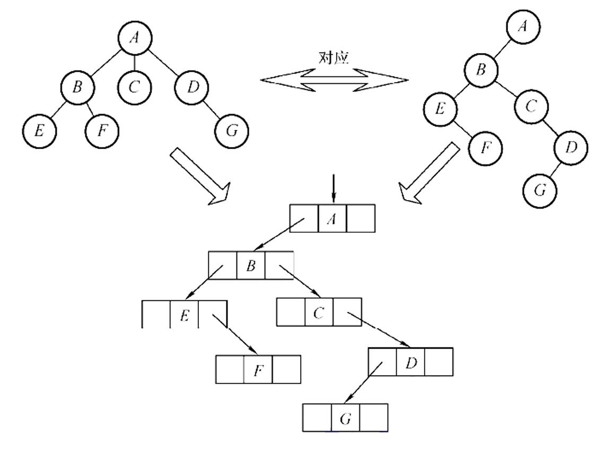
2. 森林 转换为 二叉树
依然使用孩子兄弟表示法，同层的结点作为兄弟。
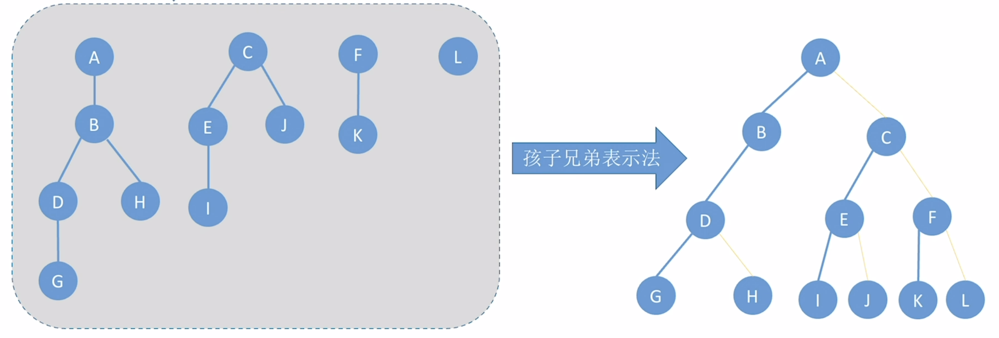
3. 二叉树 转换为 树/森林
上面的逆过程。
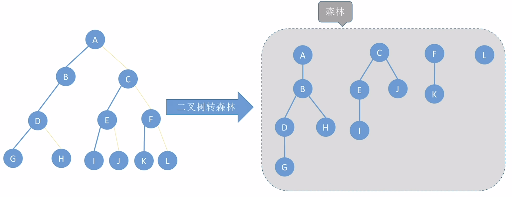
树和森林的遍历
核心结论（!!!）
| 原始结构 | 原始遍历方式 | 转换后的二叉树的对应遍历方式 |
|---|---|---|
| 树 | 先根遍历 | 先序遍历 |
| 树 | 后根遍历 | 中序遍历 |
| 森林 | 先序遍历 | 先序遍历 |
| 森林 | 中序遍历 | 中序遍历 |
先对先：无论是树还是森林，它们的先序（先根）遍历序列，都等于其转换后的二叉树的先序遍历序列。
后对中：
树的后根遍历序列，等于其转换后的二叉树的中序遍历序列。
森林的中序遍历序列，等于其转换后的二叉树的中序遍历序列。
哈夫曼树
带权路径长度
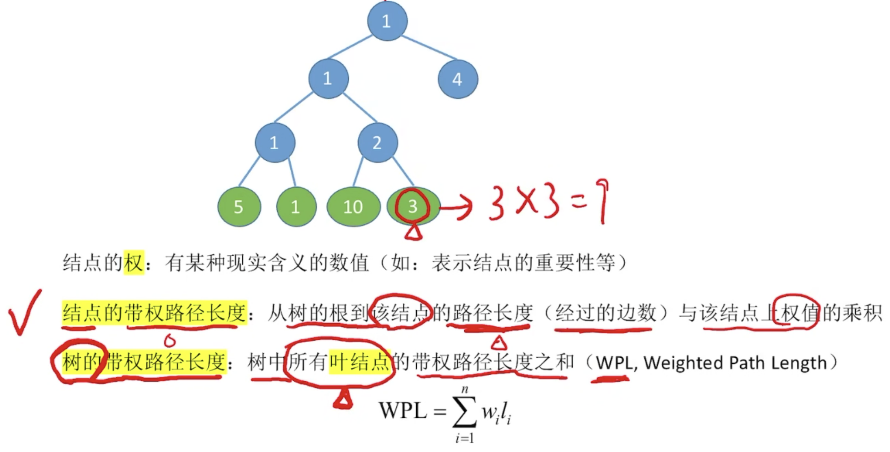
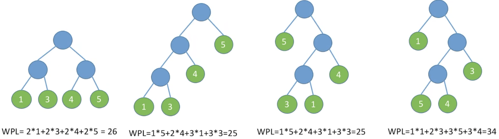
哈夫曼树
在含有n个带权叶结点的二叉树中，其中带权路径长度（WPL）最小（如上图的中间两个）的二叉树称为哈夫曼树，也称最优二叉树。
哈夫曼树的构造方法(每次选权值最小的两个结点)：
初始化: 将 n 个带权结点看作是 n 棵只有根的树，构成一个森林 F。
循环合并: a. 从森林 F 中选取权值最小的两棵树。 b. 创建一个新的父结点，其权值为这两棵树根结点权值之和。 c. 将这两棵树分别作为新结点的左、右子树（左、右位置不固定）。 d. 将新生成的树放回森林 F 中，同时移除被合并的两棵树。
终止: 重复步骤2，直到森林中只剩下一棵树，这棵树就是哈夫曼树。
哈夫曼树的性质
权值与路径: 权值越大的叶结点，离根结点越近；权值越小的叶结点，离根结点越远。
结点度数: 哈夫曼树中没有度为 1 的结点，只有度为 0（叶结点）和度为 2（分支结点）的结点。因此，它是一棵严格二叉树（或称正则二叉树）。
结点数量关系: 若有 n 个叶结点，则哈夫曼树的总结点数为 2n - 1。
推导: n 个叶子 (n₀ = n)，根据性质 n₀ = n₂ + 1，可知度为2的结点（分支结点）有 n₂ = n - 1 个。总结点数 = n₀ + n₁ + n₂ = n + 0 + (n-1) = 2n - 1。
唯一性:
构造出的哈夫曼树可能不唯一（当出现权值相同的结点时，选择哪两个进行合并，以及谁做左子树谁做右子树，都会导致树的形态不同）。
但对于同一组权值，所有可能构造出的哈夫曼树的 WPL 都是相同且最小的。
哈夫曼编码
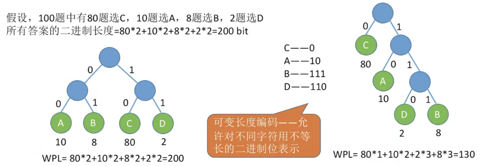
前缀编码: 任何一个字符的编码都不是另一个字符编码的前缀。这是哈夫曼编码最重要的特性，保证了译码的唯一性，不会产生歧义。
编码规则:
将哈夫曼树的左分支约定为 0，右分支约定为 1（反过来也可以）。
从根结点到每个叶子结点的路径上，将经过的分支代码串联起来，就构成了该叶子结点对应字符的哈夫曼编码。
译码: 从编码串的开头开始，对照哈夫曼树，从根往下走，遇到 0 走左，遇到 1 走右，一旦走到一个叶子结点，就译出一个字符，然后再从根结点重新开始处理剩余的编码串。
数据压缩：将字符频次作为字符结点权值，构造哈夫曼树，即可得哈夫曼编码，可用于数据压缩。
并查集
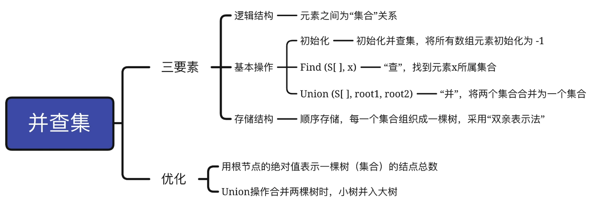
并查集是一种用来处理不相交集合的合并与查询问题的数据结构。
“并” → Union：将两个集合合并为一个集合。
“查” → Find：确定某个元素属于哪个集合（或找该集合的代表元素）。
其核心思想是：每个集合用一棵树表示，根节点代表该集合，所有的集合就构成了一个森林。
一些操作：
如何判断两个元素是否属于同一个集合？一分别查到两个元素的根，判断根节点是否相同即可。
如何“查”到一个元素属于哪一个集合？——从指定元素出发，一路向“北”，找到根节点。
如何把两个集合“并”为一个集合? --让一棵树成为另一棵树的子树即可。
并查集的存储结构
双亲表示法: 并查集最常用的存储结构。用一个数组来实现，数组的下标代表元素，数组中存储的值代表其父结点的下标。
根的表示: 根结点的父结点通常用一个负数（通常是-1）来表示。这个负数的绝对值可以用来存储额外信息，比如集合的大小（结点数）。
三个基本操作:
Initial(S): 初始化，使集合 S 中的每个元素都各自属于一个独立的子集。
Find(x): 查找元素 x 所在集合的代表元（通常是该集合对应树的根）。
Union(x, y): 合并元素 x 和 y 所在的两个集合。前提是它们不在同一个集合中。
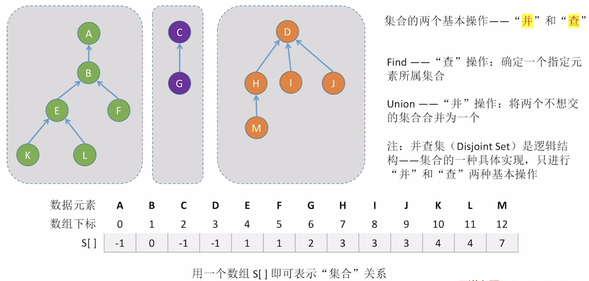
代码实现
xxxxxxxxxx
int UFSets[SIZE];
// --- 1. 并查集的初始化操作 ---void Initial(int S[]) { for (int i = 0; i < SIZE; i++) { // 将每个元素所在集合的父指针设为 -1 S[i] = -1; }}// --- 2. 并查集的 Find 操作 (未优化版) ---int Find(int S[], int x) { // 循环向上查找，直到找到根 while (S[x] >= 0) { x = S[x]; // x 更新为其父结点的下标 } return x; // 返回找到的根的下标}// --- 3. 并查集的 Union 操作 (未优化版) ---void Union(int S[], int Root1, int Root2) { // 如果两个根相同，说明它们本来就在同一个集合，无需合并 if (Root1 == Root2) return; S[Root2] = Root1; // 将根Root2连接到另一个根Root1下面}时间复杂度：
Find()函数最坏时间复杂度为O(n),跟树的高度有关;
Union()函数时间复杂度为O(1);
并查集的优化
优化思路：在每次Union操作构建树的时候，尽可能让树不长高。
用根节点的绝对值表示树的结点总数。
Union操作，让小树合并到大树，这种方法构造得到的集合树，其高度不超过⌊log₂n⌋ + 1，所以优化之后最坏时间复杂度为O(log₂n)。
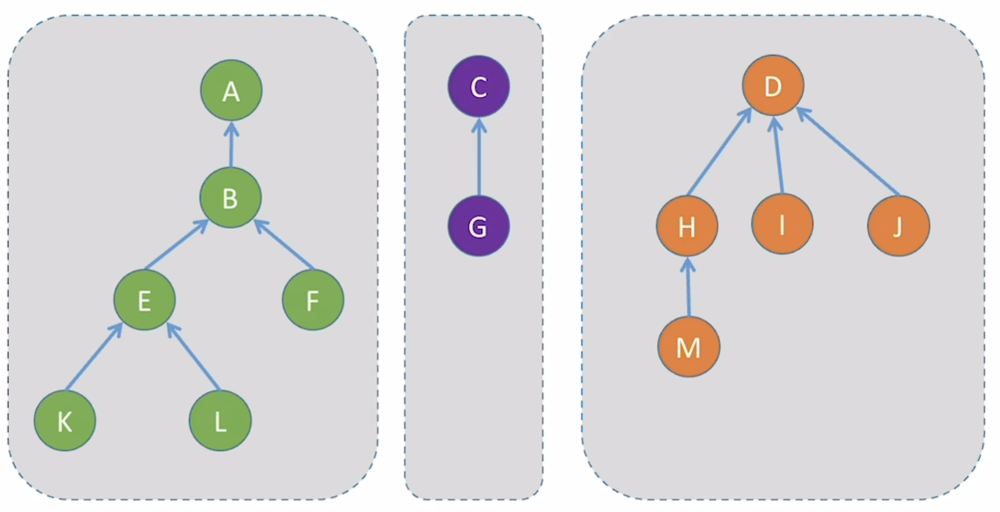
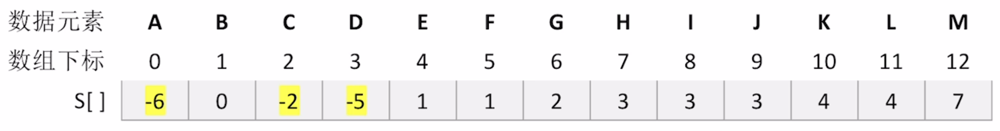
合并之后
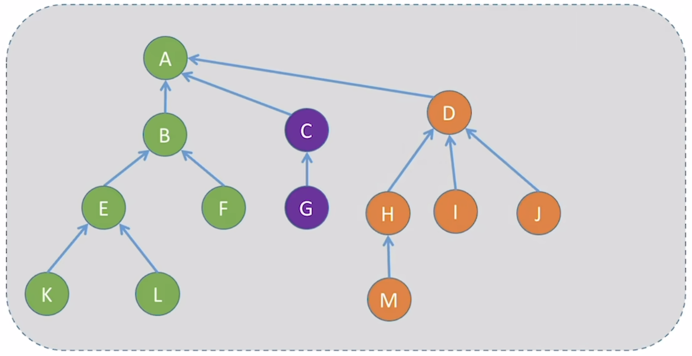
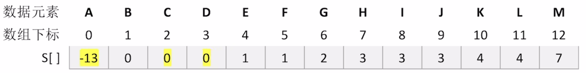
优化后的代码
xxxxxxxxxx// --- 3. 并查集的 Union 操作 (按大小合并优化版) ---void Union(int S[], int Root1, int Root2) { // 如果两个根相同，说明它们本来就在同一个集合，无需合并 if (Root1 == Root2) return; if (S[Root2] > S[Root1]) { // Root2 集合更小 S[Root1] += S[Root2]; // 将 Root1 集合的大小增加 Root2 集合的大小 S[Root2] = Root1; // 将 Root2 的父指针指向 Root1，完成合并 } else { // Root1 集合更小 S[Root2] += S[Root1]; // 将 Root2 集合的大小增加 Root1 集合的大小 S[Root1] = Root2; // 将 Root1 的父指针指向 Root2，完成合并 }}并查集的进一步优化
Find操作的优化（压缩路径）
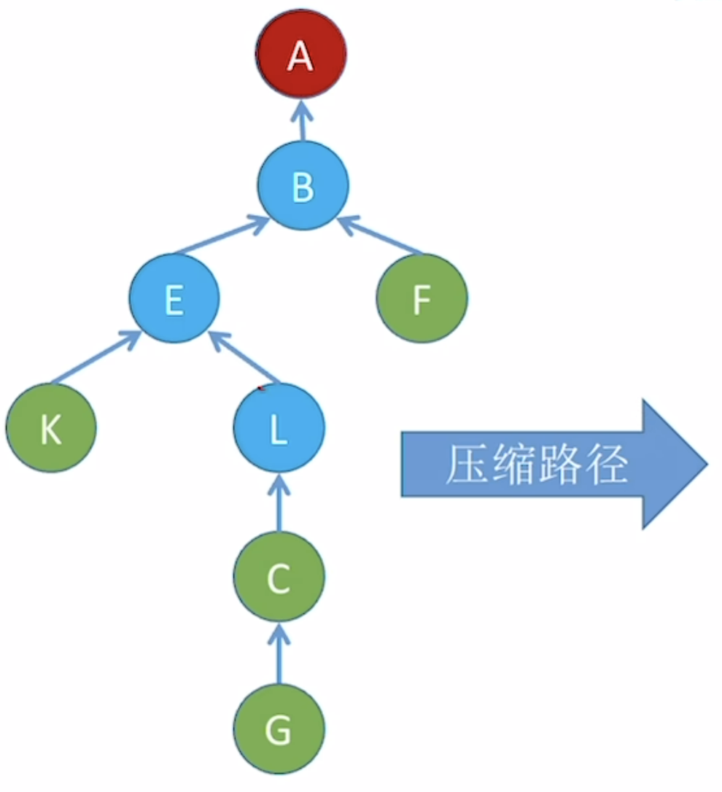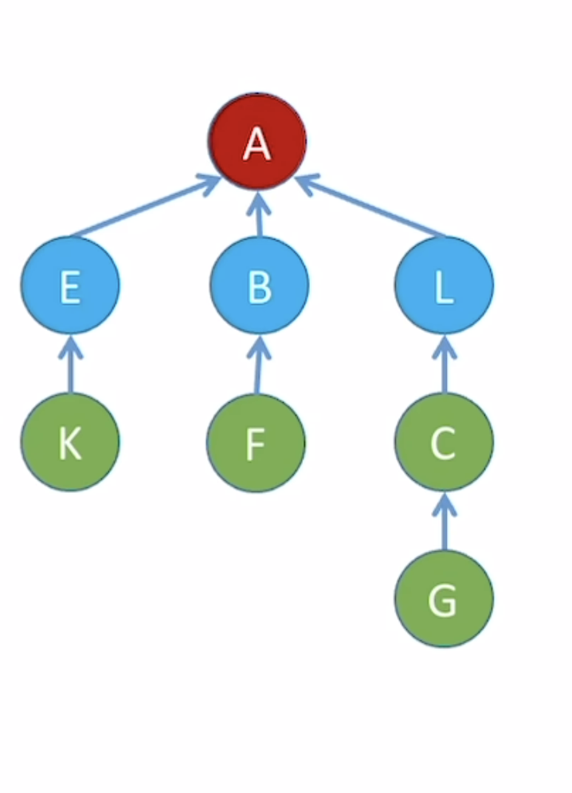
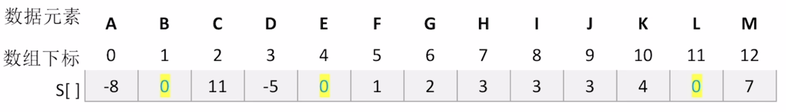
压缩路径--Find 操作，先找到根节点，再将查找路径上所有结点都挂到根结点下。
优化后的Find代码
xxxxxxxxxx// Find “查”操作优化，先找到根节点，再进行“压缩路径”int Find(int S[], int x) { int root = x; while (S[root] >= 0) // 循环找到根节点 root = S[root]; while (x != root) { // 压缩路径 int t = S[x]; // t指向x的父节点(先记录下来下一个该走的结点) S[x] = root; // x直接挂到根节点下 x = t; } return root; // 返回根节点编号}使用这种优化方式之后，此时树的最大深度增长极慢，其时间复杂度为：O(α(n)) ≈ 常数，α(n) 是一个增长极其缓慢的函数，约等于常数。
总结
| 优化方式 | 最坏树高 | Find 操作复杂度 | 合并 n 个元素为一个集合的复杂度 |
|---|---|---|---|
| 无优化 | O(n) | O(n) | O(n²) |
| 仅路径压缩 或 仅按秩合并 | O(log₂n) | O(log₂n) | O(nlog₂n) |
| 路径压缩 + 按秩合并（最优） | O(α(n)) | O(α(n)) | O(nα(n)) |
图
图的基本概念
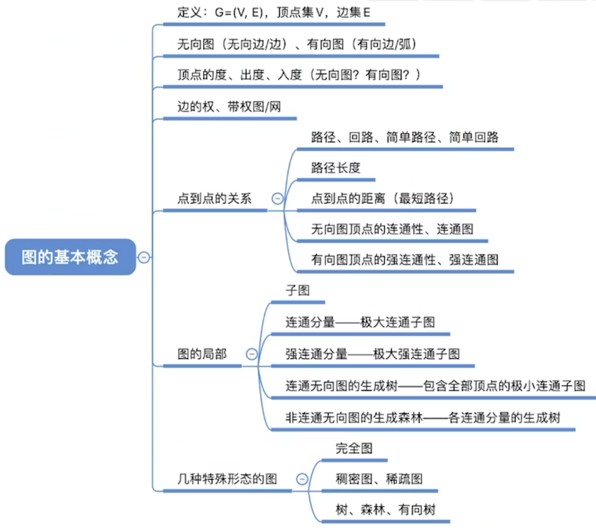
图G = (V, E)，其中：
V：顶点集（有限非空集合）
E：边集（顶点间关系的集合）
⚠️ 重要注意：
图不能是空图（顶点集V必须非空）
边集E可以为空（只有顶点没有边）
图的分类
| 类型 | 边表示 | 特点 | 示例 |
|---|---|---|---|
| 有向图 | <v, w>（弧） | 边有方向，v→弧尾，w→弧头 | 图(a) |
| 无向图 | (v, w) | 边无方向，v和w互为邻接点 | 图(b) |
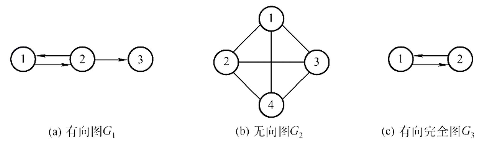
顶点的度
无向图：
度TD(v)：依附于顶点v的边的条数
⭐ 重要性质：∑TD(v) = 2|E|（全部顶点的度之和等于边数的2倍）
有向图：
入度ID(v)：以v为终点的有向边数
出度OD(v)：以v为起点的有向边数
总度：TD(v) = ID(v) + OD(v)
⭐ 重要性质：∑ID(v) = ∑OD(v) = |E|(所有顶点的入度之和和出度之和相等，且等于边数)
路径与连通性
路径相关概念：
路径：顶点序列 + 关联边
路径长度：路径中边的数目
回路/环：首尾顶点相同的路径
简单路径：顶点不重复出现
简单回路：除首尾外，顶点不重复
⭐ 重要结论：n个顶点，边数 > n-1 ⇒ 一定有环
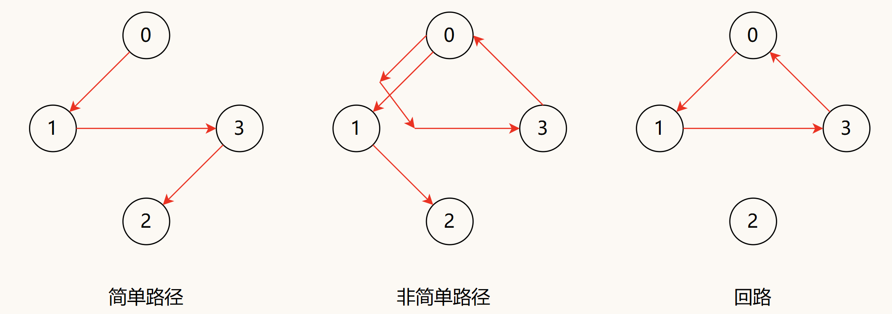
连通性
无向图：(谈连不连通)
连通：顶点v到w有路径
连通图：任意两顶点都连通
连通分量：极大连通子图（子图必须连通、而且包含尽可能多的顶点和边）
注意：极小连通子图则是保持子图连通的情况下试边数最少的子图
⭐ 重要结论：
边数 < n-1 ⇒ 必是非连通图
非连通无向图最多边数：(n-1)(n-2)/2（一个完全图+孤立顶点）
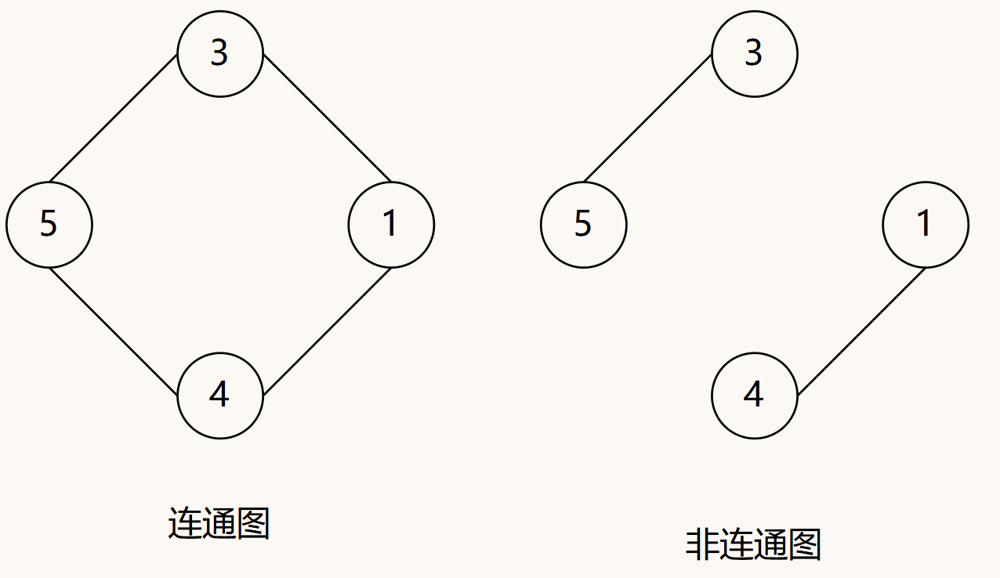
有向图：(谈是否强连通)
强连通：v→w和w→v都有路径
强连通图：任意两顶点都强连通
强连通分量：极大强连通子图
⭐ 重要结论：强连通图最少需要n条边（构成环）（环的任意两个顶点都能互相有路径）
子图与生成树
子图：V' ⊆ V, E' ⊆ E
生成树：包含所有顶点的极小连通子图（保持子图连通的情况下边数最少的子图）
n个顶点 ⇒ n-1条边
砍去一条边 ⇒ 不连通
加上一条边 ⇒ 形成回路
生成森林：非连通图中各连通分量的生成树集合
右图即为左图的一个生成树，如果再以2、3、4分别为根结点生成所有的生成树，那么这些生成树的集合即为生成森林。
特殊的图类型
| 类型 | 边数公式 | 特点 |
|---|---|---|
| 无向完全图 | n(n-1)/2 | 任意两顶点间都有边 |
| 有向完全图 | n(n-1) | 任意两顶点间都有方向相反的两条弧 |
稠密图 vs 稀疏图：边数多少的相对概念，边数很少的图称为稀疏图，反正称为稠密图。（了解）
有向树：一个顶点入度为0（根），其余顶点入度均为1。（了解）
图的存储结构
邻接矩阵
xxxxxxxxxxtypedef struct { char vex[MaxVertexNum]; // 顶点表 int edge[MaxVertexNum][MaxVertexNum]; // 邻接矩阵，边表 顶点中可以存更复杂的信息 int vexnum, arcnum; // 当前顶点数和边数 也可以用bool类型或者枚举类型表示边} MGraph;如果是带权图/网，邻接矩阵中可以把1换成权值，而0或者∞表示不可到达
注意：
邻接矩阵法的空间复杂度为:O(|V|^2)--只和顶点数相关，和实际的边数无关。
适合用于存储稠密图，而不适合用来存储稀疏图。
无向图的邻接矩阵是对称矩阵，可以压缩存储(只存储上三角区/下三角区)。
邻接矩阵法的性质

设图G的邻接矩阵为A(矩阵元素为0/1)，则An的元素An[i][j]等于由顶点i到顶点j的长度为n的路径的数目
xxxxxxxxxx**上图的1、3、2、0分别表示，从1(A)-4(D)、2(B)-2(B)、3(C)-3(C)、1(A)-2(B)，长度为2的路径的数目。**
同理，A的三次方则表示长度为3的路径的数目。
邻接表
核心思想：顺序＋链式存储（类似树的孩子表示法）
重要性质
表示不唯一：依赖于边的输入顺序和插入方式。而邻接矩阵法图的表示方式唯一。
统计边数：
无向图：边表结点数 ÷ 2
有向图：边表结点数
度的计算：
无向图：顶点 i 的度 = 第 i 个链表的结点数
有向图：
出度 = 第 i 个链表的结点数
入度 = 需要遍历整个邻接表（复杂）
xxxxxxxxxxtypedef struct ArcNode { // 边表结点 int adjvex; // 该边所指向的顶点的位置 struct ArcNode *nextarc; // 指向下一条边的指针 // InfoType info; // 网的边权值} ArcNode;
typedef struct VNode { // 顶点表结点 VertexType data; // 顶点信息 ArcNode *firstarc; // 指向第一条依附该顶点的边的指针} VNode, AdjList[MaxVertexNum];
typedef struct { AdjList vertices; // 邻接表 int vexnum, arcnum; // 图的顶点数和弧数} ALGraph;十字链表
十字链表用于存储有向图
注意：
空间复杂度:O(|V|+|E|)
如何找到指定顶点的所有出边?————顺着绿色线路找。
如何找到指定顶点的所有入边?————顺着橙色线路找。
十字链表只用于存储有向图。
邻接多重表
如果删除A-B间的边以及E结点
注意：
空间复杂度:O(|V|+|E|)(每条边只对应一份数据)。
删除边、删除节点等操作很方便。
邻接多重表只适合用于存储无向图。
总结
| 特性 | 邻接矩阵 | 邻接表 | 十字链表 | 邻接多重表 |
|---|---|---|---|---|
| 空间复杂度 | O(|V|²) | 无向图：O(|V| + 2|E|) 有向图：O(|V| + |E|) | O(|V| + |E|) | O(|V| + |E|) |
| 找相邻边 | 遍历对应行或列 时间复杂度为 O(|V|) | 找有向图的入度 必须遍历整个邻接表 | 很方便 | 很方便 |
| 删除边或顶点 | 删除边很方便 删除顶点需要大量移动数据 | 无向图中删除边或顶点 都不方便 | 很方便 | 很方便 |
| 适用于 | 稠密图 | 稀疏图和其他 | 只能存有向图 | 只能存无向图 |
| 表示方式 | 唯一 | 不唯一 | 不唯一 | 不唯一 |
图的遍历
广度优先搜索BFS
分层搜索：类似树的层序遍历。
由近及远：先访问距离起始点近的顶点，再访问距离远的顶点。
要点：
找到与一个顶点相邻的所有顶点。
标记哪些顶点被访问过。
需要一个辅助队列。
⭐ 核心数据结构：队列
注意：
同一个图的邻接矩阵表示方式唯一，因此广度优先遍历序列唯一。
同一个图的邻接表表示方式不唯一，因此广度优先遍历序列不唯一。
邻接表实现代码
xxxxxxxxxxbool visited[MAX_VERTEX_NUM]; // 访问标记数组，初始全为false
void BFS(ALGraph G, int i) { visit(i); // 访问初始顶点i visited[i] = TRUE; // 对i做已访问标记 EnQueue(Q, i); // 顶点i入队 while(!IsEmpty(Q)) { DeQueue(Q, v); // 队首顶点v出队 for(p = G.vertices[v].firstarc; p; p = p->nextarc) { // 检测v的所有邻接点 w = p->adjvex; if(!visited[w]) { visit(w); // w为v的未访问的邻接点，访问w visited[w] = TRUE; // 对w做已访问标记 EnQueue(Q, w); // 顶点w入队 } } }}上述算法存在问题
可以在遍历完之后检查visited数组，看看哪个是false，然后从该结点重新调用BFS
xxxxxxxxxxvoid BFSTraverse(Graph G){ for(int i=0; i < G.vexnum; i++){ visited[i] = false; } InitQueue(Q); for(int i=0; i< G.vexnum; i++){ if(!visited[i]){ BFS(G, i); } }}可以得到结论:对于无向图,调用BFS函数的次数 = 连通分量数
BFS算法性能分析:
空间复杂度:不管是邻接矩阵还是邻接表,最坏情况下空间复杂度都为O(|V|).
时间复杂度:
邻接矩阵:访问|V|个顶点需要O(|V|)的时间,查找每个顶点的邻接点都需要O(|V|)的时间，而总共有|V|个顶点,时间复杂度=O(|V|2).
邻接表:访问|V|个顶点需要O(|V|)的时间,查找各个顶点的邻接点共需要O(|E|)的时间，时间复杂度=O(|V|+|E|).
广度优先生成树
如上图,两棵广度优先生成树:
由2开始搜索,2找到了1和6,从1找到了5,从6找到了3和7,接着从3找到了4,从7找到了8,构造出来了左边那棵树.
由2开始搜索,2找到了1和6,从1找到了5,从6找到了3和7,接着从7找到了4和8,构造出来了右边那棵树.
深度优先搜索DFS
同样的:
同一个图的邻接矩阵表示方式唯一，因此深度优先遍历序列唯一。
同一个图的邻接表表示方式不唯一，因此深度优先遍历序列不唯一。
xxxxxxxxxxbool visited[MAX_VERTEX_NUM]; // 访问标记数组
void DFSTraverse(Graph G) { // 对图G进行深度优先遍历 for(v = 0; v < G.vexnum; ++v) visited[v] = FALSE; // 初始化已访问标记数组 for(v = 0; v < G.vexnum; ++v) // 本代码中是从v=0开始遍历 if(!visited[v]) DFS(G, v);}
void DFS(Graph G, int v) { // 从顶点v出发，深度优先遍历图G visit(v); // 访问顶点v visited[v] = TRUE; // 设已访问标记 for(w = FirstNeighbor(G, v); w >= 0; w = NextNeighbor(G, v, w)) if(!visited[w]) { // w为v的尚未访问的邻接顶点 DFS(G, w); }}DFS算法性能分析(和BFS类似):
空间复杂度:来自函数调用栈，最坏情况，递归深度为O(|V|).
时间复杂度:
邻接矩阵:访问|V|个顶点需要O(|V|)的时间,查找每个顶点的邻接点都需要O(|V|)的时间，而总共有|V|个顶点,时间复杂度=O(|V|2).
邻接表:访问|V|个顶点需要O(|V|)的时间,查找各个顶点的邻接点共需要O(|E|)的时间，时间复杂度=O(|V|+|E|).
类似的,有深度优先生成树和生成森林
图的遍历和连通性
对无向图进行BFS/DFS遍历,调用BFS/DFS函数的次数 = 连通分量数
对于连通图，只需调用1次 BFS/DFS
对有向图进行BFS/DFS遍历,调用BFS/DFS函数的次数要具体问题具体分析.
若起始顶点到其他各顶点都有路径(强连通图)，则只需调用1次BFS/DFS 函数
图的应用
最小生成树
最小生成树（MST）是在一个连接所有顶点的无向图中，通过选择一部分边而形成的树，使得树的总权重（或成本）最小。
MST 满足以下特点：
包含图中的所有顶点。
通过选择一些边而形成一个树结构，没有环路。
最小生成树可能有多个，但边的权值之和总是唯一且最小的。
最小生成树的边数 = 顶点数 -1。砍掉一条则不连通，增加一条边则会出现回路。
Prim算法
从某一个顶点开始构建生成树,每次将代价最小的新顶点纳入生成树，直到所有顶点都纳入为止。
prim 算法步骤 如下：
选定一个起始顶点作为生成树的根。
初始化生成树，只含有该顶点。
在所有 连接生成树与未加入顶点的边 中，选取权重最小的一条，并将对应顶点加入生成树。
重复步骤 3，直到所有顶点均被纳入生成树。
得到的生成树即为原图的 最小生成树。
时间复杂度:O(|V|2)适合用于边稠密图.
Kruskal克鲁斯卡尔算法
Kruskal 算法是一种用于求解 最小生成树（MST）的贪心算法。Kruskal 算法的基本思想是从边的权重最小的边开始，逐步构建生成树，确保不会形成环路。
以下是 Kruskal 算法的一般流程：
初始化一个空的生成树，开始时生成树中没有边。
将图中的所有边按照权重 从小到大进行排序。
依次 从排序后的边列表中选取边，加入生成树，但要确保 添加该边不会形成环路。
重复步骤 3，直到生成树包含了所有的顶点，即生成树中的边数等于顶点数减 1。
返回生成树作为 最小生成树。
时间复杂度: O(|E|log2|E|)适合用于边稀疏图.
最短路径问题
BFS算法
基于BFS（广度优先搜索），适用于无权图的最短路径问题
BFS天然按距离分层，先访问距离为1的顶点，再访问距离为2的顶点...

xxxxxxxxxx/*d[]数组：存储从起点u到每个顶点的最短距离path[]数组：记录最短路径上的前驱顶点，用于重构路径visited[]数组：标记顶点是否被访问过队列Q：辅助BFS遍历*/// 求顶点 u 到其他顶点的最短路径（无权图）void BFS_MIN_Distance(Graph G, int u) { // d[i]表示从u到i结点的最短路径长度 for(i = 0; i < G.vexnum; ++i) { d[i] = ∞; // 初始化路径长度为无穷大 path[i] = -1; // 最短路径从哪个顶点过来，-1表示未访问 } d[u] = 0; // 起点到自己的距离为0 visited[u] = TRUE; // 标记起点已访问 EnQueue(Q, u); // 起点入队 while(!isEmpty(Q)) { DeQueue(Q, u); // 队首元素出队 // 遍历u的所有邻接点 for(w = FirstNeighbor(G, u); w >= 0; w = NextNeighbor(G, u, w)) { if(!visited[w]) { d[w] = d[u] + 1; // 路径长度加1 path[w] = u; // 记录w的前驱是u visited[w] = TRUE; // 标记w已访问 EnQueue(Q, w); // w入队 } } }}Dijkstra迪杰斯特拉算法
如果图是带权图,那BFS算法就无法解决问题,G港到R城的最短距离不应该是10,而是2+5=7了.
算法步骤
V0 到 V2 的最短(带权)路径长度为:dist[2]=9
通过 path[]可知，V0 到 V2 的最短(帶权)路径: V2 <-- V1 <-- V4 <-- V0
事实上V0 到 V2 的最短带权路径长度为 5
结论:Dijkstra 算法不适用于有负权值的带权图
Floyd弗洛伊德算法
Floyd Warshall 是一种基于 动态规划 的方法，用于求解任意两个顶点之间的最短路径，它适用于带权有向图。
该算法的核心思想是尝试使用每一个顶点作为中转点，逐步更新所有顶点对之间的最短路径。对任意两点 i→j，判断是否可以通过一个中间点 k 得到更短路径：
这个过程会遍历所有可能的中转点 k，不断优化路径。

总结
| 特性 | BFS 算法 | Dijkstra 算法 | Floyd 算法 |
|---|---|---|---|
| 用途 | 求单源最短路径 | 求单源最短路径 | 求各顶点之间的最短路径 |
| 无权图 | 适用 | 适用 | 适用 |
| 带权图 | 不适用 | 适用 | 适用 |
| 带负权值的图 | 不适用 | 不适用 | 适用 |
| 带负权回路的图 | 不适用 | 不适用 | 不适用 |
| 时间复杂度 | O(|V|2)或 O(|V|+|E|) | O(|V|2) | O(|V|3) |
有向无环图
有向无环图:若一个有向图中不存在环（如下左图），则称为有向无环图，简称DAG图(Directed Acyclic Graph)
DAG图可以用来表达式
如上述的表达式树，则可以通过对重复出现的相同子式的共享，合并成一个有向无环图，从而节省空间．
解题技巧
构建完之后，再去看符号能否合并
注：按不同顺序构造出的有向无环图是不唯一。
拓扑排序
AOV（Activity on Vertex Network）网是一种以顶点表示活动或任务的网络模型。每个 顶点 代表一个 任务或活动，而 边 表示任务之间的 依赖关系。在AOV网中，任务或活动通常表示为顶点，而依赖关系（任务的先后顺序）表示为有向边，实际上就是使用DAG图来表示一个工程。
而拓扑排序就是在AOV网中找到做事的先后顺序，如下所示就是上图的AOV网的一个拓扑排序序列。
拓扑排序的实现：
从AOV网中选择一个没有前驱的顶点并输出。
从网中删除该顶点和所有以它为起点的有向边。
重复1和2直到当前的AOV网为空或当前网中不存在无前驱的顶点（此时说明当前所有顶点的入度都大于0，即图中存在环路）为止。
另外的，如果每次选择结点的时候选择的是没有后继（出度为0）的顶点并输出，则得到的排序序列为逆拓扑排序。

拓扑排序代码实现
xxxxxxxxxxbool TopologicalSort(Graph G) { InitStack(S); // 初始化栈，存储入度为0的顶点 for(int i = 0; i < G.vexnum; i++) { if(indegree[i] == 0) { Push(S, i); // 将所有入度为0的顶点进栈 } } int count = 0; // 计数，记录当前已经输出的顶点数 while(!IsEmpty(S)) { // 栈不空，则存在入度为0的顶点 Pop(S, i); // 栈顶元素出栈 print[count++] = i; // 输出顶点i for(p = G.vertices[i].firstarc; p; p = p->nextarc) { // 将所有i指向的顶点的入度减1，并且将入度减为0的顶点压入栈S v = p->adjvex; if(!(--indegree[v])) { Push(S, v); // 入度为0，则入栈 } } } // while if(count < G.vexnum) { return false; // 排序失败，有向图中有回路 } else { return true; // 拓扑排序成功 }}时间复杂度分析： 采用邻接表存储时为 O(|V|+|E|)(每个顶点和每条边都需要处理一次),若采用邻接矩阵，则为O(|V|2),
DFS实现逆拓扑排序代码
xxxxxxxxxxvoid DFSTraverse(Graph G) { // 对图G进行逆拓扑排序 for(v = 0; v < G.vexnum; ++v) visited[v] = FALSE; // 初始化已访问标记数组 for(v = 0; v < G.vexnum; ++v) // 本代码中是从v=0开始遍历 if(!visited[v]) DFS(G, v);}
void DFS(Graph G, int v) { // 从顶点v出发，深度优先遍历图G visited[v] = TRUE; // 设已访问标记 for(w = FirstNeighbor(G, v); w >= 0; w = NextNeighbor(G, v, w)) if(!visited[w]) { // w为v的尚未访问的邻接顶点 DFS(G, w); } print(v); // 在递归返回时(顶点退栈时)输出顶点（关键！逆序输出）}补充：图中判断有无环
| 图类型 | 方法 | 思路核心 |
|---|---|---|
| 无向图 | DFS（父节点法） | DFS过程中，如果访问到一个已访问过的顶点，但该顶点不是当前节点的父节点（来时路），则说明存在环 |
| 无向图 | 并查集 | 在遍历每条边时，若两个顶点属于同一集合（已经连接），则说明这条边会形成环 |
| 有向图 | DFS（状态标记） | 在DFS中遇到一个“正在访问中的”节点（当前的路径上），则存在环 |
| 有向图 | 拓扑排序 | 判断能否拓扑排序完 |
关键路径
在带权有向图中，以顶点表示事件，以有向边表示活动，以边上的权值表示完成该活动的开销(如完成活动所需的时间)，称之为用边表示活动的网络，简称AOE网(Activity On Edge NetWork)
AOE网具有以下两个性质:
只有在某顶点所代表的事件发生后，从该顶点出发的各有向边所代表的活动才能开始;
只有在进入某顶点的各有向边所代表的活动都已结束时，该顶点所代表的事件才能发生。另外，有些活动是可以并行进行的。
在AOE网中仅有一个入度为0的顶点，称为开始顶点(源点)（如上图V1），它表示整个工程的开始;也仅有一个出度为0的顶点，称为结束顶点(汇点)（如上图V4），它表示整个工程的结束。
从源点到汇点的有向路径可能有多条，所有路径中，具有最大(!!!)路径长度的路径称为关键路径，而把关键路径上的活动称为关键活动.
完成整个工程的最短时间就是关键路径的长度，若关键活动不能按时完成，则整个工程的完成时间就会延长.
求关键路径
关键路径、关键活动的特性：
若关键活动耗时增加，则整个工程的工期将增长。
缩短关键活动的时间，可以缩短整个工程的工期。
当缩短到一定程度时，关键活动可能会变成非关键活动，关键路径也会发生改变。
可能有多条关键路径，只提高一条关键路径上的关键活动速度并不能缩短整个工程的工期，只有加快那些包括在所有关键路径上的关键活动才能达到缩短工期的目的。
图算法时间复杂度总结
| 存储结构 | Dijkstra | Floyd | Prim | Kruskal | DFS | BFS | 拓扑排序 | 关键路径 |
|---|---|---|---|---|---|---|---|---|
| 邻接矩阵 | O(n²) | O(n³) | O(n²) | – | O(n²) | O(n²) | O(n²) | O(n²) |
| 邻接表 | – | – | – | O(elog₂e) | O(n + e) | O(n + e) | O(n + e) | O(n + e) |
查找
查找的基本概念
顺序查找
xxxxxxxxxxtypedef struct { ElemType *elem; // 动态数组基址 int TableLen; // 表的长度} SSTable; // 查找表的数据结构（顺序表）
// 顺序查找int Search_Seq(SSTable ST, ElemType key) { ST.elem[0] = key; // "哨兵"，放在0号位置 int i; for(i = ST.TableLen; ST.elem[i] != key; --i); // 从后往前找 return i; // 查找成功，则返回元素下标；查找失败，则返回0}xxxxxxxxxx**不管是查找成功还是查找失败，总体的时间复杂度都是O(n)，而空间复杂度是O(1)**
若表中数据是有序的，那么可以减少查找次数（优化查找失败情况）
若表中数据被查概率不同，那么可以减少查找次数（优化查找成功情况）
折半查找
折半查找，又称“二分查找”，仅适用于有序的顺序表。顺序表拥有随机访问的特性，而链表没有，所以不可能使用链表实现折半查找。
折半查找代码
xxxxxxxxxxtypedef struct { ElemType *elem; // 动态数组基址 int TableLen; // 表的长度} STable; // 查找表的数据结构（顺序表）
// 折半查找int Binary_Search(STable L, ElemType key) { int low = 0, high = L.TableLen - 1, mid; while (low <= high) { mid = (low + high) / 2; // 取中间位置 if (L.elem[mid] == key) return mid; // 查找成功则返回所在位置 else if (L.elem[mid] > key) high = mid - 1; // 从前半部分继续查找 else low = mid + 1; // 从后半部分继续查找 } return -1; // 查找失败，返回-1}查找效率
注意：
折半查找的判定树中，若 mid =|(low+high)/2|（向下取整），则对于任何一个结点，必有:右子树结点数-左子树结点数=0或1。
折半查找的判定树是一个平衡的二叉排序树。
折半查找总体的时间复杂度为O(log2n)，而空间复杂度是O(1).
分块查找
索引表是里面的数据是有序的，所以可以采用折半查找
查找效率分析（ASL）
拓展
xxxxxxxxxx**动态查找表：需要动态增加和删除元素。**
二叉排序树（BST）
二叉排序树的查找
xxxxxxxxxx// 二叉排序树结点typedef struct BSTNode { int key; struct BSTNode *lchild, *rchild;} BSTNode, *BSTree;
// 在二叉排序树中查找值为 key 的结点（非递归实现）BSTNode *BST_Search(BSTree T, int key) { while (T != NULL && key != T->key) { // 若树空或等于根结点值，则结束循环 if (key < T->key) T = T->lchild; // 小于，则在左子树上查找 else T = T->rchild; // 大于，则在右子树上查找 } return T;}递归版本的实现
xxxxxxxxxx// 在二叉排序树中查找值为 key 的结点（递归实现）BSTNode *BST_Search_Recursive(BSTree T, int key) { if (T == NULL || key == T->key) return T; if (key < T->key) return BST_Search_Recursive(T->lchild, key); // 小于，则在左子树上查找 else return BST_Search_Recursive(T->rchild, key); // 大于，则在右子树上查找}注意：非递归实现最坏空间复杂度为O(1)，而递归实现最坏空间复杂度为O(h).
查找效率
二叉排序树的时间复杂度：（跟树的高度直接关联）
最好情况：O(logn)，此时树的高度最小。
平均情况：O(logn)。
最坏情况：O(n)，此时有多少个结点树就有多高。
二叉排序树的插入
xxxxxxxxxx// 在二叉排序树插入关键字为k的新结点（递归实现） **最坏空间复杂度仍为O(h)**int BST_Insert(BSTree &T, int k) { if (T == NULL) { // 原树为空，新插入的结点为根结点 T = (BSTree)malloc(sizeof(BSTNode)); T->key = k; T->lchild = T->rchild = NULL; return 1; // 返回1，插入成功 } else if (k == T->key) // 树中存在相同关键字的结点，插入失败 return 0; else if (k < T->key) // 插入到T的左子树 return BST_Insert(T->lchild, k); else // 插入到T的右子树 return BST_Insert(T->rchild, k);}二叉排序树的构造
xxxxxxxxxx// 构造二叉排序树void Create_BST(BSTree &T, int keys[], int n) { T = NULL; // 初始化为空树 int i = 0; while(i < n) { BST_Insert(T, keys[i]); // 依次插入每个关键字 }}注意：不同的关键字序列（顺序不同）可能得到同样的二叉排序树，也有可能得到不同的二叉排序树。
二叉排序树的删除
删除规则：
若被删除结点z是叶结点，则直接删除，不会破坏二叉排序树的性质。
若结点z只有一棵左子树或右子树，则让z的子树成为z父结点的子树，替代z的位置。
若结点z有左、右两棵子树，则令z的直接后继(或直接前驱)替代z，然后从二叉排序树中删去这个直接后继(或直接前驱)，这样就转换成了第一或第二种情况。直接后继：右子树的最左边的结点；直接前驱：左子树最右边的结点。
平衡二叉树（AVL）
平衡二叉树(Balanced BinaryTree)，简称平衡树(AVL树)--树上任一结点的左子树和右子树的高度之差不超过1。 结点的平衡因子=左子树高-右子树高
平衡二叉树的插入
调整最小不平衡子树的规则
第一种：LL
第二种：RR
第三种：LR
第四种：RL
平衡二叉树的查找
平衡二叉树的删除
例1：直接删(!!!)
例2(!!!)
例3(!!!)
例4(!)
例5(*)
例6(*)

红黑树
| 特性 | BST | AVL Tree | Red-Black Tree |
|---|---|---|---|
| 诞生时间 | 1960 | 1962 | 1972 |
| Search（查找） | O(n) | O(log₂n) | O(log₂n) |
| Insert（插入） | O(n) | O(log₂n) | O(log₂n) |
| Delete（删除） | O(n) | O(log₂n) | O(log₂n) |
平衡二叉树 AVL：插入/删除很容易破坏"平衡"特性，需要频繁调整树的形态。如：插入操作导致不平衡，则需要先计算平衡因子，找到最小不平衡子树（时间开销大），再进行 LL/RR/LR/RL 调整。适用于以查为主、很少插入/删除的场景
红黑树 RBT：插入/删除很多时候不会破坏"红黑"特性，无需频繁调整树的形态。即便需要调整，一般都可以在常数级时间内完成。适用于频繁插入、删除的场景，实用性更强。
红黑树是二叉排序树：左子树结点值 ≤ 根结点值 ≤ 右子树结点值
特性（左根右、根叶黑、不红红、黑路同）：
每个结点或是红色，或是黑色的
根节点是黑色的
叶结点（外部结点、NULL结点、失败结点）均是黑色的
不存在两个相邻的红结点（即红结点的父节点和孩子结点均是黑色）
对每个结点，从该节点到任一叶结点的简单路径上，所含黑结点的数目相同
xxxxxxxxxxstruct RBnode { // 红黑树的结点定义 int key; // 关键字的值 RBnode* parent; // 父节点指针 RBnode* lchild; // 左孩子指针 RBnode* rchild; // 右孩子指针 int color; // 结点颜色，如：可用 0/1 表示 黑/红，也可使用枚举型enum表示颜色};性质1:从根节点到叶结点的最长路径不大于最短路径的2倍。
性质2:有n个内部节点的红黑树高度 h ≤ 2log2(n+1) --> 红黑树查找操作时间复杂度=O(log2n) (查找效率与AVL树同等数量级)
红黑树的查找与 BST、AVL相同，从根出发，左小右大，若查找到一个空叶节点，则查找失败。
红黑树的插入
例：从一棵空的红黑树开始，插入:20,10,5,30,40,57,3,2,4,35,25,18,22,23,24,19,18
...以此类推
红黑树的删除（了解）
重要考点：
红黑树删除操作的时间复杂度O(log2>n)
在红黑树中删除结点的处理方式和“二叉排序树的删除”一样。
按2删除结点后，可能破坏“红黑树特性”，此时需要调整结点颜色、位置，使其再次满足“红黑树特性”。
B树
五叉排序树
为了保证查找效率，要求:m叉查找树中，规定除根节点外，任何结点至少有|m/2|（向上取整）个分叉，即至少含有|m/2|-1（向上取整）个关键字。
m叉查找树中，规定对于任何一个结点，其所有子树的高度都要相同，即平衡因子都为0。
m阶B树实际上就是所有节点的平衡因子均为0的m路平衡查找树
举例 (m=5，即5阶B树)：
m = 5
最多关键字数 = m - 1 = 4
最少关键字数 (非根) = |5/2|-1 = 2
结论：一个5阶B树，除根外，每个节点至少2个关键字，最多4个关键字。
B树的高度（不包含叶子结点、N为关键字）
| 高度类型 | 最好情况（最“胖”） | 最坏情况（最“瘦”） |
|---|---|---|
| 公式 | ||
| 推导 |
B树的查找
从根节点开始。
在当前节点内，（用二分法）查找关键字 K。
找到：查找成功。
未找到：
若 K < K1，进入 P0 子树。
若 K > Kn，进入 Pn 子树。
若 Ki < K < Ki+1，进入 Pi 子树。
重复此过程，直到找到 K 或到达叶子节点的下一层 (NULL)，查找失败。
B树的插入
B树的插入永远发生在叶子节点(最底层的终端结点)层。
查找定位：找到
插入关键字：将
检查溢出（上溢）：
情况一：未溢出 (
情况二：溢出 (
核心：节点分裂
找到中位数：在溢出的节点（共
“提升”中位数：将
分裂节点：
比中位数小的关键字（共
比中位数大的关键字（共
处理父节点：父节点增加了关键字
递归溢出：如果父节点也溢出，递归地对父节点执行分裂。
特殊情况：若根节点溢出，分裂后产生新的根节点，树的高度增加 1。
B树的删除操作
B树的删除最终总是转化为对叶子节点（终端结点）的操作。
步骤一：查找并定位：
查找要删除的关键字
情况A：K 在叶子节点。直接删除
情况B：K 在内部节点。
找到
用
问题转化为删除叶子节点中的
步骤二：处理下溢：
删除叶子节点的
情况一：未下溢。操作结束。
情况二：下溢。必须调整。
核心：处理下溢（两种策略）：
假设节点 X 发生下溢。
策略1：向“富裕”的兄弟借：
检查 X 的左兄弟或右兄弟是否“富裕”（关键字数
借调（以向左兄弟借为例）：
父节点中分隔二者的关键字
左兄弟中最大的关键字
（左兄弟的最右孩子指针移交给X）
树重新平衡。
策略2：与“贫穷”的兄弟合并：
如果 X 的左右兄弟都“贫穷”（都只有
合并（以和左兄弟合并为例）：
将 X 节点剩余关键字。
将父节点的
将左兄弟的所有关键字。
三部分合并成一个新节点（并入左兄弟）。
处理父节点：父节点失去
递归下溢：如果父节点也下溢，递归地对父节点执行下溢处理。
特殊情况：若下溢传播到根，导致根节点关键字为0，则删除根，树的高度减少 1。
B+树
B+树是B树的变体，在数据库（如 MySQL InnoDB）中应用更广。有点类似于分块查找。
B+树的概念
内部节点（分支节点）：
只包含关键字（索引）和孩子指针，不存储数据。
因此，节点可容纳更多关键字，树更矮胖。
叶子节点（数据节点）：
包含所有的关键字。
包含指向这些关键字对应的数据记录的指针。
所有叶子节点都在同一层。
关键字冗余：分支节点中的关键字，会冗余地出现在叶子节点中。
叶子链表：所有叶子节点按关键字顺序链接在一起，形成一个有序链表。
结点的字数与关键字个数相等，有几个关键字就有几个子树。
所有分支结点中仅包含它的各个子结点中关键字的最大值及指向其子结点的指针(类似于分块查找的思想)。
B+树与B树的核心区别
| 特性 | B树 (B-Tree) | B+树 (B+ Tree) |
|---|---|---|
| 数据存储 | 内部节点和叶子节点都存储数据。 | 只有叶子节点存储数据。内部节点只存索引。 |
| 查找效率 | 不稳定。可能在内部节点命中。 | 稳定。任何查找都必须走到叶子节点。 |
| 范围查询 | 困难 (需中序遍历)。 | 极易 (沿叶子节点的链表顺序扫描，支持顺序查找)。 |
| 关键字冗余 | 关键字唯一。 | 内部节点的关键字在叶子节点冗余出现。 |
| 节点容量 | 内部节点因存数据，容量较小。 | 内部节点不存数据，容量更大（子树更多了），树更矮胖。 |
总结：B+树牺牲了内部节点的存储空间（只当索引），换来了更低的树高（I/O更少）、更稳定的查询效率，以及对范围查询的极佳支持。
注意：对于B树和B+树，为了充分利用磁盘块，一个节点的大小设计得和磁盘块大小差不多。这样，每读取一次磁盘（一次I/O），就能把一个包含大量关键字的节点读入内存。也就是说每查找一层结点，都进行一次读磁盘的操作。
散列表
基本概念
为了减少冲突，应该构造更适合的散列函数，让各个关键字尽可能地映射到不同的存储位置，从而减少“冲突”
散列函数构造
常用的构造方法有：
直接定址法：H(key) = a * key + b 。计算简单，不会产生冲突。但只适合关键字分布基本连续的情况，否则浪费空间。
除留余数法：H(key) = key % p 。这是最常用的方法。
数字分析法：选取关键字中数码分布较为均匀的若干位作为散列地址。适合已知的关键字集合。
平方取中法：取关键字平方值的中间几位作为散列地址。这使得散列地址与关键字的每位都有关系，分布较均匀。
处理冲突的方法
拉链法
PS：若在新元素插入链表时，若能保持链表有序,可以略微提高“查找”效率。
开放定址法
定义：指可存放新表项的空闲地址既向同义词开放，也向非同义词开放。（发生冲突之后，找另一个空闲位置）
公式：
常见增量序列：
线性探测法：
缺点：易产生“堆积”或“聚集”现象，即同义词和非同义词的探查序列交织在一起，大大降低查找效率。
平方探测法：
优点：可以避免出现“堆积”问题。
缺点：不能探测到散列表上的所有单元。
双散列法：
伪随机序列法：
关于删除操作
带来的问题:查找效率低下，散列表看起来很满，实则很空.（可以不定期整理散列表的数据）
总结

散列表查找性能分析
例题

装填因子
聚集（堆积）现象
总结
排序
排序基本概念
插入排序
直接插入排序
算法思想：将待排序元素插入到已排序序列的适当位置，从而得到新的有序序列。
执行过程：
从第二个元素开始（i=1），依次处理每个元素
如果当前元素小于前一个元素，需要插入到正确位置
从当前元素的前一个位置开始向前扫描，找到插入位置
将大于当前元素的元素都向后移动一位
将当前元素插入到正确位置
xxxxxxxxxx//直接插入排序void InsertSort(int A[], int n) { int i, j, temp; for (i = 1; i < n; i++) { //将各元素插入已排好序的序列中 if (A[i] < A[i-1]) { //若A[i]关键字小于前驱 temp = A[i]; //用temp暂存A[i] for (j = i-1; j >= 0 && A[j] > temp; --j) { //检查所有前面已排好序的元素 A[j+1] = A[j]; //所有大于temp的元素都向后挪位 } A[j+1] = temp; //复制到插入位置 } }}时间复杂度：
最好情况：O(n) - 数组已有序
最坏情况：O(n²) - 数组逆序
平均情况：O(n²)
空间复杂度：O(1) - 原地排序
稳定性：稳定排序算法
折半插入排序
算法思想：在直接插入排序的基础上，使用折半查找来确定插入位置，减少比较次数。
执行过程：
从第二个元素开始（i=2），依次处理每个元素
将当前元素A[i]暂存到A[0]（哨兵位置）
使用折半查找在已排序序列中确定插入位置
将插入位置后的所有元素向后移动一位
将当前元素插入到正确位置
xxxxxxxxxx// 折半插入排序void InsertSort(int A[], int n) { int i, j, low, high, mid; for (i = 2; i <= n; i++) { // 依次将 A[2] ~ A[n] 插入前面的已排序序列 A[0] = A[i]; // 将 A[i] 暂存到 A[0] low = 1; // 设置折半查找的范围 high = i - 1; while (low <= high) { // 折半查找（默认递增有序） mid = (low + high) / 2; // 取中间点 if (A[mid] > A[0]) { high = mid - 1; // 查找左半子表 } else { low = mid + 1; // 查找右半子表 } } for (j = i - 1; j >= high + 1; --j) { A[j + 1] = A[j]; // 统一后移元素，空出插入位置 } A[high + 1] = A[0]; // 插入操作 }}当 low > high 时折半查找停止，应将 [low,i-1]内的元素全部右移，并将 A[0]复制到 low 所指位置。
当 A[mid] == A[0]时，为了保证算法的“稳定性”，应继续在 mid 所指位置右边寻找插入位置。
注意：
比起“直接插入排序”，比较关键字的次数减少了，但是移动元素的次数没变，整体来看时间复杂度依然是O(n²)。
如果对链表进行插入排序，虽然移动元素的次数变少了，但是关键字的对比次数依旧是O(n²)数量级（需要从头到尾遍历找到某个元素），整体来看，时间复杂度依然是O(n²)。
希尔排序

希尔排序的基本思想是：先将整个待排序的记录序列分割成为若干子序列分别进行直接插入排序，待整个序列中的记录"基本有序"时，再对全体记录进行依次直接插入排序。
算法步骤：
1.选择增量序列：选择一个增量序列 d1, d2, ..., dk，其中 d1 > d2 > ... > dk = 1
2.按增量分组：按增量将数组分割成若干子序列
3.各组插入排序：对每个子序列进行直接插入排序
4.减小增量：重复步骤2-3，直到增量为1
5.最终排序：当增量为1时，对整个数组进行直接插入排序
通常每次增量都取上次一的一半，但考试中可能遇到各种增量，如下面所示
代码实现（了解）
xxxxxxxxxx// 希尔排序void ShellSort(int A[], int n) { int d, i, j; // A[0]只是暂存单元，不是哨兵，当j<=0时，插入位置已到 for (d = n / 2; d >= 1; d = d / 2) { // 步长变化 for (i = d + 1; i <= n; ++i) { if (A[i] < A[i - d]) { // 需将A[i]插入有序增量子表 A[0] = A[i]; // 暂存在A[0] for (j = i - d; j > 0 && A[0] < A[j]; j = j - d) { A[j + d] = A[j]; // 记录后移，后移到该子表的“下一个位置” } A[j + d] = A[0]; // 插入 } } }}时间复杂度：取决于增量序列的选择
最好情况：O(nlog n)
最坏情况：O(n²)
平均情况：O(n^1.3)
空间复杂度：O(1) - 原地排序，只需要常数级别的额外空间
稳定性：不稳定的排序算法
适用性：只适用于顺序表，不适用于链表
冒泡排序
基于“交换”的排序:根据序列中两个元素关键字的比较结果来对换这两个记录在序列中的位置。
包括冒泡排序和快速排序。
冒泡排序算法思想：
通过相邻元素的比较和交换，使较大的元素逐渐"沉底"，较小的元素逐渐"上浮"
每趟排序都会将当前未排序部分的最小元素放到正确位置
xxxxxxxxxx// 交换void swap(int &a, int &b) { int temp = a; a = b; b = temp;}
// 冒泡排序void BubbleSort(int A[], int n) { for (int i = 0; i < n - 1; i++) { // i 可以表示i之前的元素都已经有序 bool flag = false; // 表示本趟冒泡是否发生交换的标志 for (int j = n - 1; j > i; j--) { // 一趟冒泡过程 if (A[j - 1] > A[j]) { // 若为逆序 swap(A[j - 1], A[j]); // 交换 flag = true; } } if (flag == false) { return; // 本趟遍历后没有发生交换，说明表已经有序 } }}时间复杂度：
最好情况：O(n) - 数组已有序，只需一趟扫描
最坏情况：O(n²) - 数组完全逆序
平均情况：O(n²)
空间复杂度：O(1) - 原地排序
稳定性：稳定排序算法
适用性：冒泡排序也适用于链表，可从前往后“冒泡”，每一趟将更大的元素“冒”到链尾。
快速排序
快速排序（Quick Sort）是一种高效的排序算法，采用分治法策略。
基本思想：
选取基准：从数列中选取一个元素作为基准（pivot）
分区操作：将数列重新排列，所有比基准值小的放在前面，所有比基准值大的放在后面，这样可以确定当前基准元素在有序表中的实际位置。
递归排序：递归地对两个子序列进行快速排序
算法步骤：
如果数组长度为0或1，直接返回
选择一个基准元素
将数组分成两个子数组：
小于基准的元素
大于等于基准的元素
递归地对两个子数组进行快速排序
代码实现（重要!!!）
xxxxxxxxxx// 用第一个元素将待排序序列划分成左右两个部分int Partition(int A[], int low, int high) { int pivot = A[low]; // 第一个元素作为枢轴 while (low < high) { // 用low、high搜索枢轴的最终位置 while (low < high && A[high] >= pivot) --high; // high指针不断左移，直到找到一个元素的值比pivot元素更小 A[low] = A[high]; // 比枢轴小的元素移动到左端 while (low < high && A[low] <= pivot) ++low; // low指针不断右移，直到找到一个元素的值比pivot元素更大 A[high] = A[low]; // 比枢轴大的元素移动到右端 } A[low] = pivot; // 枢轴元素存放到最终位置 return low; // 返回存放枢轴的最终位置}
// 快速排序void QuickSort(int A[], int low, int high) { if (low < high) { // 递归跳出的条件 int pivotpos = Partition(A, low, high); // 划分 QuickSort(A, low, pivotpos - 1); // 划分左子表 QuickSort(A, pivotpos + 1, high); // 划分右子表 }}时间复杂度：
最好情况：O(nlogn)
平均情况：O(nlogn)
最坏情况：O(n²) - 当数组已有序或逆序时
空间复杂度：
平均情况：O(logn) - 递归栈深度
最坏情况：O(n) - 极度不平衡的分区，当数组已有序或逆序时
特点：
原地排序，不需要额外空间
不稳定排序算法
是所有内部排序算法中平均性能最优的排序算法
递归实现，需要注意栈溢出问题
适用性：仅适用于顺序存储的线性表。
优化思路:尽量选择可以把数据中分的枢轴元素。
选头、中、尾三个位置的元素，取中间值作为枢轴元素;
随机选一个元素作为枢轴元素；
简单选择排序
简单选择排序是一种直观的排序算法，它的工作原理是每次从待排序的数据元素中选出最小（或最大）的一个元素，存放在序列的起始位置。
基本思想:
查找最小值：在未排序序列中找到最小元素
交换位置：将找到的最小元素与未排序序列的第一个元素交换
缩小范围：将序列的已排序部分扩大一个元素，未排序部分缩小一个元素
重复过程：重复上述过程，直到所有元素均排序完毕
代码实现
xxxxxxxxxx// 交换void swap(int &a, int &b) { int temp = a; a = b; b = temp;}
// 简单选择排序void SelectSort(int A[], int n) { for (int i = 0; i < n - 1; i++) { // 一共进行n-1趟 int min = i; // 记录最小元素位置 for (int j = i + 1; j < n; j++) // 在A[i...n-1]中选择最小的元素 if (A[j] < A[min]) min = j; // 更新最小元素位置 if (min != i) swap(A[i], A[min]); // 封装的swap()函数共移动元素3次 }}时间复杂度：
比较次数：固定为 n(n-1)/2 次
交换次数：最多 n-1 次
时间复杂度：O(n²) - 无论数据初始状态如何
空间复杂度：O(1) - 原地排序
适用性：适用于顺序表和链表
不稳定排序：相等元素的相对位置可能改变
堆排序(选择排序)

接下来依次处理i=3,2,1...，每次选择的非叶子节点的左右孩子有比他大的，就和这个孩子交换。
建立大根堆的代码
xxxxxxxxxx// 将以 k 为根的子树调整为大根堆void HeadAdjust(int A[], int k, int len) { A[0] = A[k]; // A[0]暂存子树的根结点 for (int i = 2 * k; i <= len; i *= 2) { // i = 2 * k:让i指向当前节点的左孩子 if (i < len && A[i] < A[i + 1]) // 判断左右孩子谁更大 i < len 的时候才能保证该结点有右兄弟 i++; // 右孩子更大 if (A[0] >= A[i]) // 判断A[0](根节点)与较大的孩子谁更大 break; // 根节点更大，满足要求，不需要处理了 else { // 孩子更大 A[k] = A[i]; // 将A[i]调整到双亲结点上 k = i; // 修改k值，以便继续向下筛选 } } A[k] = A[0]; // 被筛选结点的值放入最终位置}
// 建立大根堆void BuildMaxHeap(int A[], int len) { for (int i = len / 2; i > 0; i--) // 从后往前调整所有非终端结点 HeadAdjust(A, i, len);}堆排序:每一趟将堆顶元素加入有序子序列(与待排序序列中的最后一个元素（最后一个叶子节点）交换)，并将待排序元素序列再次调整为大根堆(小元素不断“下坠”)
xxxxxxxxxx// 堆排序void HeapSort(int A[], int len){ BuildMaxHeap(A, len); // 初始建立大根堆 for(int i=len; i>1 ;i--){ Swap(A[i], A[1]); // 堆顶元素和堆底元素交换 HeadAdjust(A, 1 ,i-1); // 把剩余的待排序元素整理成堆 }}时间复杂度：
建堆阶段：O(n)
排序阶段：每次调整堆需要O(logn)，共n-1次，所以为O(nlog n)
总时间复杂度：O(nlogn)
空间复杂度：
O(1) - 原地排序，只需要常数级别的额外空间
算法特点：
不稳定排序算法
仅适用于顺序存储的线性表
基于大根堆的堆排序得到“递增序列”，基于小根堆的堆排序得到“递减序列”
堆中插入新元素
对于小根堆，新元素放到表尾，与父节点对比，若新元素比父节点更小，则将二者互换。新元素就这样一路“上升”，直到无法继续上升为止。
堆中删除元素
归并排序
核心操作：把数组内的两个有序序列归并为1个。
xxxxxxxxxx// 归并操作// A[low...mid]和A[mid+1...high]各自有序，将两个部分归并void Merge(int A[], int low, int mid, int high) { int *B = (int *)malloc((high - low + 1) * sizeof(int)); // 辅助数组B int i, j, k; for (k = low; k <= high; k++) B[k] = A[k]; // 将A中所有元素复制到B中 for (i = low, j = mid + 1, k = i; i <= mid && j <= high; k++) { if (B[i] <= B[j]) A[k] = B[i++]; // 将较小值复制到A中 else A[k] = B[j++]; } // 处理剩余元素 while (i <= mid) A[k++] = B[i++]; while (j <= high) A[k++] = B[j++]; free(B); // 释放辅助数组}// 归并排序主函数void MergeSort(int A[], int low, int high) { if (low < high) { int mid = (low + high) / 2; // 每次递归地从中间划分 MergeSort(A, low, mid); // 对左半部分排序 MergeSort(A, mid + 1, high); // 对右半部分排序 Merge(A, low, mid, high); // 归并 }}基数排序
时间复杂度：
最好情况：O(d×(n+r))
最坏情况：O(d×(n+r))
平均情况：O(d×(n+r))
其中：
d：最大数字的位数,也是d躺分配和收集
n：数组长度
r：基数（这里是10），或者是每个部分可能取得的r个值
空间复杂度： O(r) - 需要r个辅助队列
稳定性： 稳定
计数排序
代码实现
xxxxxxxxxx// 计数排序void CountSort(int A[], int B[], int n, int k) { int i, C[k]; // 辅助数组C的长度取决于待排序元素取值范围[0, k) for (i = 0; i < k; i++) // 初始化计数数组 C[i] = 0; for (i = 0; i < n; i++) // Step1: 遍历待排序数组，统计每个关键字的出现次数 C[A[i]]++; for (i = 1; i < k; i++) // Step2: 再次处理辅助数组，统计不大于i的元素个数 C[i] = C[i] + C[i-1]; // C[i]保存的是小于或等于i的元素个数 for (i = n-1; i >= 0; i--) { // Step3: 利用辅助数组C实现计数排序（从后往前处理） C[A[i]] = C[A[i]] - 1; B[C[A[i]]] = A[i]; // 将元素A[i]放在输出数组B的正确位置上 }}稳定排序：从后往前遍历保证了排序的稳定性
非比较排序：不通过比较元素来排序
时间复杂度：O(n + k) （B和C两个辅助数组，长度分别为n和k）
若
若
计数排序在数据范围k较小的情况下效率很高，但当数据范围很大时，其效率会低于基于比较的排序算法。
空间复杂度：O(n + k) （B和C两个辅助数组，长度分别为n和k）

各种内部排序算法的比较
| 排序算法 | 平均时间复杂度 | 最好情况 | 最坏情况 | 空间复杂度 | 稳定性 |
|---|---|---|---|---|---|
| 直接插入 | 是 | ||||
| 冒泡排序 | 是 | ||||
| 简单选择 | 否 | ||||
| 希尔排序 | 否 | ||||
| 快速排序 | 否 | ||||
| 堆排序 | 否 | ||||
| 归并排序 | 是 | ||||
| 基数排序 | 是 |
💡 记忆口诀（不稳定性）： 图中提到“快些选堆” (快速、希尔、选择、堆) 是不稳定的，其余通常是稳定的。
时间复杂度：
快速排序：平均性能最优，但在最坏情况（有序或逆序）下退化为
堆排序 & 归并排序：时间复杂度恒定，不受初始序列影响。
空间复杂度：
大多数算法仅需
快速排序：需要递归工作栈，平均
归并排序：空间代价最大，需要
过程特征：
每趟归位一个元素： 冒泡排序、简单选择排序、堆排序、快速排序（每趟至少能确定一个元素的最终位置）。
并非每趟归位： 插入排序、归并排序（中间结果并不代表最终位置）。
注:
关于快速排序： 它是“平均性能最好”的，但在有序情况下最差。如果题目问“平均最快”，选快排；如果问“最坏情况下最快”，选堆排或归并。
关于归并排序： 它是唯一一个既属于
关于移动次数： 简单选择排序的特点是移动次数很少，跟序列初始状态无关。
外部排序
最终得到初始归并段
然后进行第一次归并排序
然后进行第二次归并
最终得到两个有序的归并段
最后把这两个归并段合并成一个即可
由于读写内存所用的时间远远大于内部排序和归并所用的时间，所以要尽量减少归并的趟数从而减少读写磁盘的次数
对
推导过程如下：
然而，多路归并也带来负面影响：
首先，
其次，每挑选一个关键字需要对比关键字
败者树

败者树实现思路
败者树解决的问题是：使用多路平衡归并虽然可以减少归并趟数，但传统方法从
败者树可视为一棵完全二叉树（多了一个头节点）。
通过败者树，每次选择最小元素的比较次数从
置换-选择排序
最佳归并树
对于这个二路归并，通过构造哈夫曼树可以得到：
注意——虚段
当初始归并段数量为n，进行k路归并时，计算
如果结果为
如果结果为
例如，假设有8个初始归并段，进行3路归并：
计算
再如，有10个初始归并段，进行4路归并：
计算